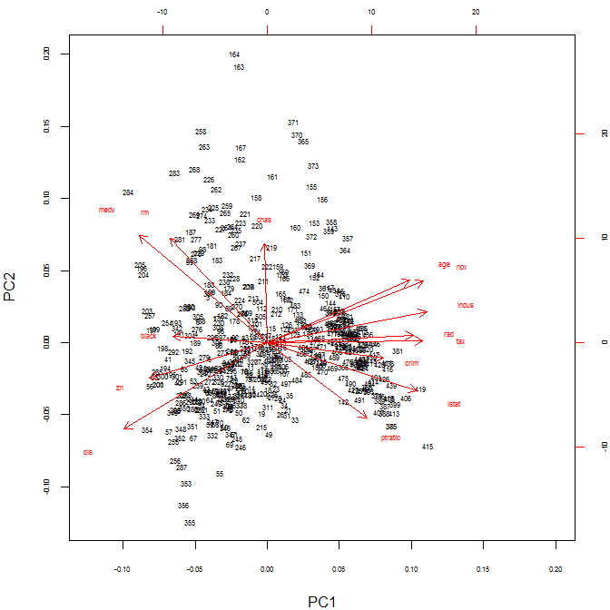
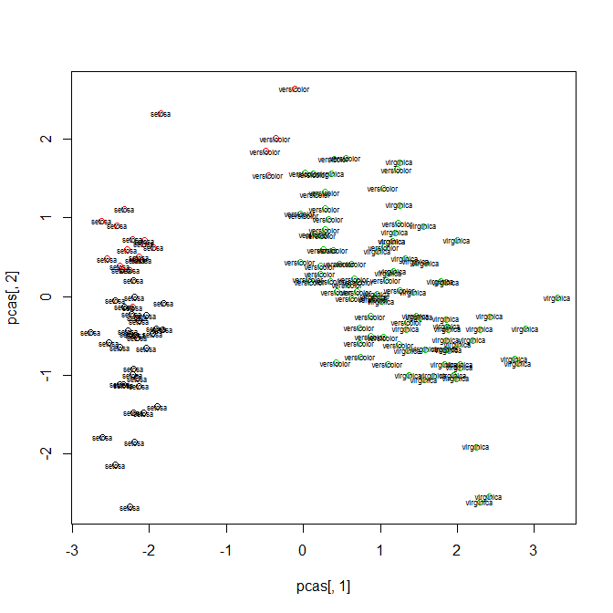
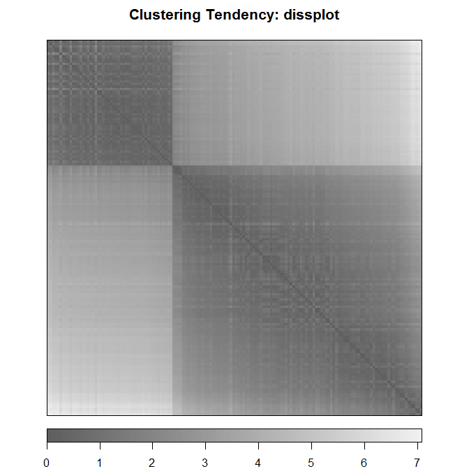
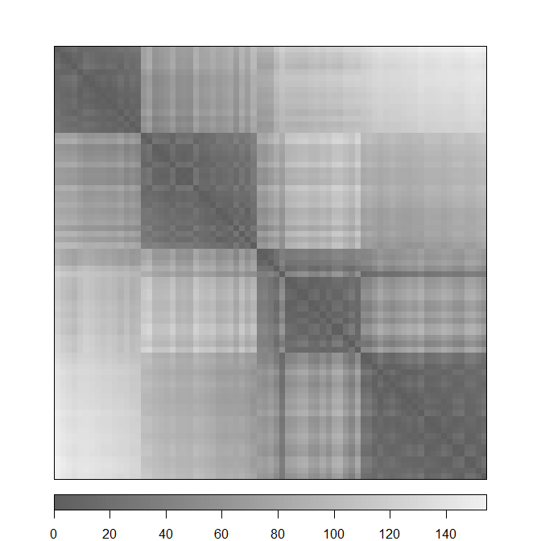
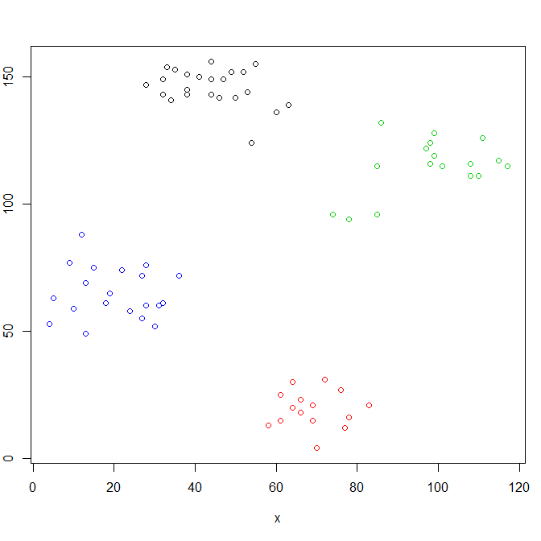
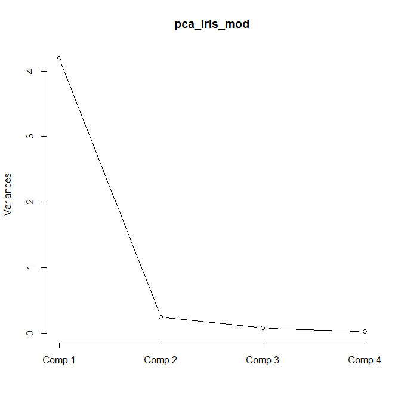
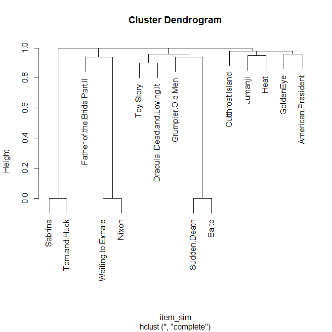

Unsupervised Learning
Jose Parreno Garcia
January 2018
library(knitr)In the previous sections we covered regression, classification and some extra advanced algorithms to tackle both of the above. All of these fall under the category of supervised learning, where you have a known response variable to predict. In unsupervised learning a response variable is not needed, and the idea is to present algorithms that will discover patterns only giving the features of the dataset, without a specific goal to classify. In this section we will cover:
- Dimensionality reduction with principal components
- Clustering with Kmeans and principal components
- Clustering tendency and optimum number of clusters
- Hierarchical clustering
- Clustering with affinity propagation
- Recommendation engine
1 Dimensionality reduction with principal components
We are going to look at:
- How PCA works and interpret PCA
- Biplot
- Implementation in R
1.1 How PCA works and interpret PCA
As a rule of thumb, the total information of a dataset is defined by the variability it contained. A very simple example is that, if you only have 1 feature then you will probably have less variability in the information than if you have 10 features. Does that apply the same if we had 1000 features? Generally, by adding more features, we dont necessarily gain more variability, and this variability tends to saturate. The typical examples is correlation. When you have many many features in the dataset, you will probably have some that are correlated with each other, and therefore, using these pairs isn’t going to yield much more value than if you only used one of those features. The idea of PCA is trying to explain the variability of the data in fewer variables, in other words, grouping together variables to form another simplified variable called Principal Components.
Lets check a first example to the Boston dataset.
- We use the prcomp function and scale = TRUE
- pca_out shows the loadings used to calculate the principal components. Loadings are like \(\beta\) coefficients that are multiplied with each feature to compute the principal component values
- boston_pc contains the actual principal components
- boston_pc has 14 PC, being PC1 the one that explains the maximum variability -> you can see this in the summary(pca_out)
- Summary(pca_out) shows the cummulative variance of the principal components, going from 0.4674 for PC1 up to 1.00 for PC14. As you can see, the more PC14 you add, the less additional gain in variability you will have.
# Load the data
data(Boston, package = "MASS")
# Calculate a simple PCA
pca_out = prcomp(Boston, scale. = T)
pca_out## Standard deviations (1, .., p=14):
## [1] 2.5585132 1.2843410 1.1614241 0.9415625 0.9224421 0.8124105 0.7317177 0.6348831 0.5265582 0.5022524 0.4612919 0.4277704 0.3660733 0.2456149
##
## Rotation (n x k) = (14 x 14):
## PC1 PC2 PC3 PC4 PC5 PC6 PC7 PC8 PC9 PC10 PC11 PC12 PC13 PC14
## crim 0.242284451 -0.065873108 0.395077419 -0.100366211 0.004957659 -0.22462703 0.777083366 -0.15740140 0.254211798 -0.071384615 -0.071068781 0.06327612 0.097032312 0.059114176
## zn -0.245435005 -0.148002653 0.394545713 -0.342958421 0.114495002 -0.33574694 -0.274178365 0.38031404 0.382899480 0.245579673 -0.127709065 -0.22112210 -0.132375830 -0.096296807
## indus 0.331859746 0.127075668 -0.066081913 0.009626936 -0.022583692 -0.08082495 -0.340273839 -0.17174578 0.627048264 -0.254827026 0.273797614 0.34840828 0.083716854 -0.235472877
## chas -0.005027133 0.410668763 -0.125305293 -0.700406497 -0.535197817 0.16264906 0.074075775 0.03292700 -0.018642967 -0.041706916 -0.009968402 -0.01903975 -0.049917454 0.023488966
## nox 0.325193880 0.254276363 -0.046475549 -0.053707583 0.194605570 -0.14899191 -0.198092965 -0.04745838 -0.043024391 -0.211620349 -0.437475550 -0.44909357 0.524974687 0.087649148
## rm -0.202816554 0.434005810 0.353406095 0.293357309 -0.008320481 0.13108056 0.074084938 0.43761566 -0.003666947 -0.526133916 0.223951923 -0.12560554 -0.049893596 0.007190515
## age 0.296976574 0.260303205 -0.200823078 0.078426326 0.149750092 -0.06086960 0.118580363 0.58810569 -0.043265822 0.245647942 -0.329630928 0.48633905 -0.051462562 -0.038227027
## dis -0.298169809 -0.359149977 0.157068710 -0.184747787 -0.106219480 0.01162335 -0.104397844 0.12823060 -0.175802196 -0.299412026 -0.114600078 0.49356822 0.552292172 0.047124029
## rad 0.303412754 0.031149596 0.418510334 0.051374381 -0.230352185 -0.13493732 -0.137080107 -0.07464872 -0.463439397 0.115793486 0.042213348 0.01863641 -0.006278474 -0.634975332
## tax 0.324033052 0.008851406 0.343232194 0.026810695 -0.163425820 -0.18847146 -0.313984433 -0.07099212 -0.179446555 -0.008366413 0.042794054 0.17042179 -0.242987756 0.698822190
## ptratio 0.207679535 -0.314623061 0.000399092 0.342036328 -0.615707380 0.27901731 0.001485608 0.28346960 0.274525949 0.160474164 -0.099991841 -0.23214842 0.188347079 0.055738160
## black -0.196638358 0.026481032 -0.361375914 0.201741185 -0.367460674 -0.78590728 0.074842780 0.04444175 -0.060975651 -0.146292237 0.039194858 -0.04152885 -0.021078199 -0.016165280
## lstat 0.311397955 -0.201245177 -0.161060336 -0.242621217 0.178358870 -0.09197211 0.083213083 0.35748247 -0.171810921 0.066647267 0.683032690 -0.18189209 0.249489863 0.083143795
## medv -0.266636396 0.444924411 0.163188735 0.180297553 -0.050659893 -0.05402804 -0.009964973 -0.15230879 0.070751083 0.575547284 0.242001064 0.09828580 0.469629324 0.134127182# Show actual principal components
boston_pc = pca_out$x
head(boston_pc)## PC1 PC2 PC3 PC4 PC5 PC6 PC7 PC8 PC9 PC10 PC11 PC12 PC13 PC14
## 1 -2.085280 0.4923660 -0.33565863 0.02806062 1.01179950 -0.2618327 0.3275539 -0.16005808 -0.4706823 -0.2055695943 -0.77929505 -0.1095206 -0.4941907 0.24768597
## 2 -1.372024 -0.1707548 -0.96500929 0.43197898 0.25439282 0.3034788 0.5585569 0.28836506 -0.1956362 -0.2459951705 -0.27726872 0.5881189 -0.1129447 -0.11300499
## 3 -2.374204 0.9131235 -0.08993678 1.12280202 -0.03275573 0.5083969 0.4870519 -0.08240874 0.0541731 -0.1948119933 0.02887660 0.4160065 0.3566767 0.05125674
## 4 -2.834974 0.1946773 0.06048549 1.06462885 -0.45987914 0.7133022 0.6227126 -0.23948531 -0.3582658 -0.1557370949 -0.24432275 0.1345659 0.5772376 0.08953590
## 5 -2.770174 0.4328708 0.06397874 1.12852010 -0.38180095 0.6552062 0.7038004 0.10252408 -0.4083493 -0.0004210339 0.00775053 0.2213430 0.7776655 0.14816451
## 6 -2.298644 -0.3283548 -0.44993218 0.69305853 -0.29988892 0.5822707 0.6480631 -0.13247191 -0.4656342 0.1100695972 -0.48317508 0.3511512 0.4333900 0.02416410# Summary of the PC
summary(pca_out)## Importance of components%s:
## PC1 PC2 PC3 PC4 PC5 PC6 PC7 PC8 PC9 PC10 PC11 PC12 PC13 PC14
## Standard deviation 2.5585 1.2843 1.16142 0.94156 0.92244 0.81241 0.73172 0.63488 0.5266 0.50225 0.4613 0.42777 0.36607 0.24561
## Proportion of Variance 0.4676 0.1178 0.09635 0.06332 0.06078 0.04714 0.03824 0.02879 0.0198 0.01802 0.0152 0.01307 0.00957 0.00431
## Cumulative Proportion 0.4676 0.5854 0.68174 0.74507 0.80585 0.85299 0.89123 0.92003 0.9398 0.95785 0.9730 0.98612 0.99569 1.000001.2 Biplot
This is the graphical representation of the information shown in the summary, where the x-axis represents the principal components:
plot(pca_out)
The principal components can also help visualise how the features, as well as the observations are related:
- Each number is a row in the dataset
- The red lines are the columns
- The points situated together are more similar
- The columns that are closer to each other are more correlated
- We will see how to capture those numbers/lines that are similar in the next section.
par(mar=c(4,4,2,2))
biplot(pca_out, cex = 0.5, cex.axis = 0.5)
2 Clustering with Kmeans and principal components
PCA helped us identify those components that explain variability in the data, and would help us select groups of variables that would be most useful for information gain. Kmeans is used to identify classes within the data. We will cover:
- How kmeans works
- Implementation
and visualize the groupings
- How to cluster with principal components
2.1 How kmeans works
Here the steps for the Kmeans algorithm:
- Decide the number of clusters in your data (k) and then pick randomnly centers of those clusters
- Once we have the centers, calculate using a distance metric (lets say the Euclidean distance), the distance between each point and the different centers.
- When we have those distances, the points will grouped with it’s closest center location.
- We then recalculate the center of the group with the points we have grouped together, and we will be back to the step of calculating the nearest center.
- This iteration process stops when the points are not being reassigned to any other different grouping or the centers keep at the same location
- SOMETHING TO BE CAREFUL WITH! The final allocation of clusters can differ depending on the initialization of the random clusters. Therefore, it is always a good idea to perform kmeans a number of times and then take, for each point, the majority class that all kmean runs assigned it to.
2.2 Implement and visualize the groupings
Kmeans on iris data:
- We want 3 clusters
- You can see that all points are allocated to those 3 clusters
library(cluster)
set.seed(100)
# We exclude the species column because it doesnt represent numeric data and ask for kmeans to calculate 3 clusters
k_obj = kmeans(iris[,-5],3)
k_obj## K-means clustering with 3 clusters of sizes 33, 21, 96
##
## Cluster means:
## Sepal.Length Sepal.Width Petal.Length Petal.Width
## 1 5.175758 3.624242 1.472727 0.2727273
## 2 4.738095 2.904762 1.790476 0.3523810
## 3 6.314583 2.895833 4.973958 1.7031250
##
## Clustering vector:
## [1] 1 2 2 2 1 1 1 1 2 2 1 1 2 2 1 1 1 1 1 1 1 1 1 1 2 2 1 1 1 2 2 1 1 1 2 1 1 1 2 1 1 2 2 1 1 2 1 2 1 1 3 3 3 3 3 3 3 2 3 3 2 3 3 3 3 3 3 3 3 3 3 3 3 3 3 3 3 3 3 3 3 3 3 3 3 3 3 3 3 3 3 3 3 2 3 3 3 3 2 3 3 3 3 3 3 3 3 3 3 3 3 3 3 3 3 3 3 3 3 3 3 3
## [123] 3 3 3 3 3 3 3 3 3 3 3 3 3 3 3 3 3 3 3 3 3 3 3 3 3 3 3 3
##
## Within cluster sum of squares by cluster:
## [1] 6.432121 17.669524 118.651875
## (between_SS / total_SS = 79.0 %)
##
## Available components:
##
## [1] "cluster" "centers" "totss" "withinss" "tot.withinss" "betweenss" "size" "iter" "ifault"2.3 How to cluster with principal components
Since the iris dataset has more than 2 variables, lets see if we can use this as a simple example of clustering with principal components. We will also try to plot the components of PCA1 and PCA2:
- First we calculate principal components
- As you can see from the summary, the first 2 components pretty much offer all the variability we will get from the data.
- pcas shows how we predict, for each record, the classes using the different PCs. We would expect PC1 and PC2 to predict with better results than PC3 and PC4. To check this we can plot the results
- In the plot, you can see there is a distinct separation between the setosa class and the other 2, however, versicolor and virginica seems to fall in the same group. This is quite not satisfactory. Probably, this might be because, with the data we used, there is no distinct separation between these 2 groups.
# Calculate principal components
pcmod = prcomp(iris[,-5], scale = T)
summary(pcmod)## Importance of components%s:
## PC1 PC2 PC3 PC4
## Standard deviation 1.7084 0.9560 0.38309 0.14393
## Proportion of Variance 0.7296 0.2285 0.03669 0.00518
## Cumulative Proportion 0.7296 0.9581 0.99482 1.00000# We use the information from the PC to predict with them the classes of the whole data
pcas = predict(pcmod)
head(pcas)## PC1 PC2 PC3 PC4
## [1,] -2.257141 -0.4784238 0.12727962 0.024087508
## [2,] -2.074013 0.6718827 0.23382552 0.102662845
## [3,] -2.356335 0.3407664 -0.04405390 0.028282305
## [4,] -2.291707 0.5953999 -0.09098530 -0.065735340
## [5,] -2.381863 -0.6446757 -0.01568565 -0.035802870
## [6,] -2.068701 -1.4842053 -0.02687825 0.006586116# Given that we are interested in PC1 and PC2, we plot the results and the k-clusters
plot(pcas[,1],pcas[,2], col = k_obj$cluster)
text(pcas[,1],pcas[,2], iris$Species, cex = 0.5)
2.4 Clustering with kmeans the PCAs rather than original data
How can we rectifiy this? A possible solution is to cluster into those 3 groups based on the principal components of iris rather than the original data.
- As you can see from the plot, clustering based on the PCA seemed to have done the job!
- The only downside, is that we have gone through a process of MANUALLY providing the number of clusters to kmeans, therefore, needing an understanding of the data beforehand. The next section will try to cover how to extract the optimal number of clusters, when there is little knowledge of the data
# PCAs
pcmod = prcomp(iris[,-5], scale = T)
pcas = predict(pcmod)
# Cluster
k_pca = kmeans(pcas, 3)
# Plot
plot(pcas[,1], pcas[,2], col = k_pca$cluster)
text(pcas[,1], pcas[,2], iris$Species, cex = 0.5)
# Table
table(k_pca$cluster, iris$Species)##
## setosa versicolor virginica
## 1 50 0 0
## 2 0 39 14
## 3 0 11 363 Clustering tendency and optimum number of clusters
As said just above, sometimes in real world applications, we might not know how many clusters we need or want to segment our data, so it can be helpful if we can do this automatically. We will see:
- Clustering tendency
- How to visualise it
- Finding optimum number of clusters
3.1 Clustering tendency
In order to measure clustering tendency, we can look at basing this on Hopkins Statistic, which measures the probability that a given dataset is generated from random data points. So, the lower the Hopskings statistic, the lower the chance that the observations are spread uniformly.
Lets compute the Hopkins statistic for the iris dataset. As you can see below, the Hopkins statistic is ~18%, so we could say that the data points are not random.
library(clustertend)
hopkins(iris[, -5], n = (nrow(iris)-1))## $H
## [1] 0.1785227Lets visualize the clustering tendency with a diss-plot and a random matrix of generated numbers. Given that we created random numbers, we expect no patterns to be created, and the dissplot shows this. Doing the same for the iris dataset, the dissplot shows clearly, 2 distinct groups. It also seems like, within the big groups, there are some different shades of grey indicating smaller subgroups within the same big group.
library(seriation)
# Random matrix and plot
set.seed(100)
rand_mat = matrix(runif(1000), nrow = 100)
dissplot(dist(rand_mat), main = "Clustering Tendency: dissplot")
# Iris plot -> we pass the distance metric matrix to the dissplot function
df_dist = dist(iris[,-5])
dissplot(df_dist, main = "Clustering Tendency: dissplot")
3.2 Selecting the optimum number of clusters
To do this we will use the Silhouette Width. Silhouette width can be used to measure how well separated the clusters are. In general, the more the separation the better the clustering, but this principle might not always be relevant as there could be groups that are structurally similar, so you should always apply a bit of common sense to this analysis.

# Loading the data
data(ruspini, package = "cluster")
x = ruspini
# Hopkins statistic
hopkins(ruspini, n = nrow(ruspini)-1)## $H
## [1] 0.2283923# Dissplot -> shows possible 4 clusters
dissplot(dist(ruspini))
# Initialize output of silhouette width
avg_sil_wid = numeric(nrow(x)/2)
# Run kmeans with different values and compute the silhouette width. The k with highest silhouette width, is likely to be the best
for(nclus in 2:(nrow(x)/2)){
set.seed(100) # for repeatability
kout = kmeans(x, nclus) # run kmeans with different number of clusters
ss = silhouette(kout$cluster, dist(x)) # create a Silhouette plot
avg_sil_wid[nclus] = mean(ss[, 3]) # saving the results
}
opt_cluster = which.max(avg_sil_wid)
opt_cluster## [1] 4# Let plot this.
par(mar = c(5,2,3,1))
plot(1:(nrow(x)/2)
, avg_sil_wid
, type = "b"
, pch = 19
, frame = T
, xlab = "Number of clusters k"
, ylab = "AvgSilWid"
, main = "Optimal clusters - yaxis = average silhouette width")
points(x = opt_cluster
, y = max(avg_sil_wid)
, col = "red"
, pch = 21
, cex = 3)
abline(v = which.max(avg_sil_wid), lty = 2)
# Plotting points in a chart for the best selected cluster
set.seed(100)
kout = kmeans(x, 4)
plot(ruspini, col = kout$cluster)
4 Hierarchical clustering
Clustering can also be computed and visualized as a hierarchy as well. We will see:
- How hierarchical clustering works
- Dendograms
4.1 How hierarchical clustering works
Broadly, there are 2 type of hierarchical clustering:
- Agglomerative: (bottom-up) Starting with each ite in its own cluster, find the best pair to merge into a new cluster and repeat until all clusters are fused together
- Divise: (top-down) Starting with all the data in a single cluster, consider every possible way to divide the cluster into 2. Choose the best division and recursiely operated on both sides.
- Both approaches are based on calculating the similarity between clusters based on distances. The way distances are computed could be based on links:
4.2 Implementation in R with seeds dataset
Lets use the seeds dataset from the UCI machine learning repo. In order to perform hierarchical clustering, we need to compute the distance matrix and then pass it to the hclust function.
# Load data
data = read.table("https://archive.ics.uci.edu/ml/machine-learning-databases/00236/seeds_dataset.txt", header = F, fill = T)
colnames(data) = c("area","perimeter","compactness","length_of_kernel","width_of_kernel","asymmetry_coefficient","length_of_kernel_groove","type")
# Distance matrix
dist_mat = dist(data[,-8])
# Hierarchical clustering
h = hclust(dist_mat)
h##
## Call:
## hclust(d = dist_mat)
##
## Cluster method : complete
## Distance : Euclidean
## Number of objects: 210# Plotting hierarchical clustering
plot(h, cex = 0.75, labels = data$type)
# Adding 3 clustered rectangles with different colours
rect.hclust(h, k = 3, border = 2:4)
# After having creating the clustering, assign each observation to its cluster
pred = cutree(h, k = 3)
pred## [1] 1 1 1 1 1 1 1 1 1 1 1 1 1 1 1 1 2 1 1 2 1 1 1 2 1 1 2 2 1 1 2 1 1 1 1 1 1 1 1 2 2 2 2 1 1 1 1 1 1 1 1 1 1 1 1 1 1 1 1 2 2 2 2 2 2 2 1 1 1 2 1 1 1 3 1 1 1 3 3 1 1 3 3 3 3 3 3 3 3 3 3 3 3 3 3 1 3 3 3 3 1 3 3 3 3 3 3 1 3 3 3 3 3 3 3 3 3 3 3 3 3 1
## [123] 1 3 1 3 3 3 3 1 3 3 1 1 1 1 1 1 1 1 2 2 2 2 2 2 2 2 2 2 2 2 2 2 2 2 2 2 2 2 2 2 2 2 2 2 2 2 2 2 2 2 2 2 2 2 2 2 2 2 2 2 2 2 2 2 2 2 2 2 2 2 2 2 2 2 2 2 2 2 2 2 2 2 2 2 2 2 2 24.3 Implementation in R with iris dataset
# Distance matrix
dist_mat = dist(iris[,-5])
# Hierarchical clustering
h = hclust(dist_mat, method = "ward.D")
h##
## Call:
## hclust(d = dist_mat, method = "ward.D")
##
## Cluster method : ward.D
## Distance : Euclidean
## Number of objects: 150# Plotting hierarchical clustering
plot(h)
# Adding 3 clustered rectangles with different colours
rect.hclust(h, k = 3, border = 2:4)
# After having creating the clustering, assign each observation to its cluster
pred = cutree(h, k = 3)
pred## [1] 1 1 1 1 1 1 1 1 1 1 1 1 1 1 1 1 1 1 1 1 1 1 1 1 1 1 1 1 1 1 1 1 1 1 1 1 1 1 1 1 1 1 1 1 1 1 1 1 1 1 2 2 2 2 2 2 2 2 2 2 2 2 2 2 2 2 2 2 2 2 2 2 2 2 2 2 2 2 2 2 2 2 2 2 2 2 2 2 2 2 2 2 2 2 2 2 2 2 2 2 3 2 3 3 3 3 2 3 3 3 3 3 3 2 2 3 3 3 3 2 3 2
## [123] 3 2 3 3 2 2 3 3 3 3 3 2 3 3 3 3 2 3 3 3 2 3 3 3 2 3 3 2table(pred, iris$Species)##
## pred setosa versicolor virginica
## 1 50 0 0
## 2 0 50 14
## 3 0 0 365 Clustering with affinity propagation
An important difference between k-mean and affinity propagation is that in kmeans we start with a predefined number of clusters and randomnly initially choose the centers, running this multiple times to define the groupings. In affinity propagation every point is a potential center, also called examplers. The points kind of send messaged to each other and align themselves creating local clusters. This situation of sending messages continues, because points dont want the responsibility of being the exampler, so they look for others to share this, creating more stable and bigger clusters.
5.1 Implementation in R with seeds dataset
library(apcluster)
# Read data
data = read.table("https://archive.ics.uci.edu/ml/machine-learning-databases/00236/seeds_dataset.txt", header = F, fill = T)
colnames(data) = c("area","perimeter","compactness","length_of_kernel","width_of_kernel","asymmetry_coefficient","length_of_kernel_groove","type")
head(data)## area perimeter compactness length_of_kernel width_of_kernel asymmetry_coefficient length_of_kernel_groove type
## 1 15.26 14.84 0.8710 5.763 3.312 2.221 5.220 1
## 2 14.88 14.57 0.8811 5.554 3.333 1.018 4.956 1
## 3 14.29 14.09 0.9050 5.291 3.337 2.699 4.825 1
## 4 13.84 13.94 0.8955 5.324 3.379 2.259 4.805 1
## 5 16.14 14.99 0.9034 5.658 3.562 1.355 5.175 1
## 6 14.38 14.21 0.8951 5.386 3.312 2.462 4.956 1The apcluster function takes a similarity matrix as the main input, so we need to first calculate this. There are multiple options you could use to compute this:
- Negative similarity matrix –> negDistMat(data[, -8], r = 2)
- Exponential similarity matrix –> expSimMat(data[, -8], r = 2, w = 1, method = “euclidean”)
- Linear similarity matrix –> linSimMat(data[, 8], w = 1, method = “euclidean”)
- Correlation pairwise similarity matrix –> corSimMat(data[, -8], r = 1, signed = TRUE)
# Similarity matrix -> negative distance matrix: it computes the negative similarities of all 210 observations.
# The "r" argument computes the power of the computed distances (in this square distances).
neg_sim_mat = negDistMat(data[, -8], r = 2)
# Compute the clusters
clus = apcluster(neg_sim_mat)
cl = clus@clusters # get the clusters
xmplrs = clus@exemplars # get the exemplars
# The dataset shows that we have 11 clusters! The only thing is that we need to convert clusters and exemplars into a "consumable" format.
clus##
## APResult object
##
## Number of samples = 210
## Number of iterations = 144
## Input preference = -16.40538
## Sum of similarities = -200.5588
## Sum of preferences = -180.4592
## Net similarity = -381.018
## Number of clusters = 11
##
## Exemplars:
## 28 54 59 75 83 100 105 142 174 182 209
## Clusters:
## Cluster 1, exemplar 28:
## 4 24 27 28 31 41 42 43 46 60 65 66 70 149 161 166 180 199 200 202
## Cluster 2, exemplar 54:
## 3 6 7 8 11 13 14 15 16 21 22 29 30 32 33 34 39 45 48 49 51 53 54 57 68 136
## Cluster 3, exemplar 59:
## 1 2 5 9 10 12 18 19 23 25 26 35 36 37 47 50 55 56 58 59 67 69 125 138 139
## Cluster 4, exemplar 75:
## 38 44 52 71 72 73 75 76 77 80 81 96 101 108 123 130 133 134 135 137 140
## Cluster 5, exemplar 83:
## 78 79 82 83 89 90 94 114 115 121
## Cluster 6, exemplar 100:
## 84 86 87 91 98 99 100 102 106 110 111 113 116 128 129 131
## Cluster 7, exemplar 105:
## 74 85 88 92 93 95 97 103 104 105 107 109 112 117 118 119 120 122 124 126 127 132
## Cluster 8, exemplar 142:
## 40 142 143 152 185 204 208
## Cluster 9, exemplar 174:
## 146 150 151 156 160 165 171 172 174 175 176 177 178 179 181 184 189 190 191 194
## Cluster 10, exemplar 182:
## 17 20 64 141 144 145 148 153 158 163 164 167 182 183 187 196 197 198 201 210
## Cluster 11, exemplar 209:
## 61 62 63 147 154 155 157 159 162 168 169 170 173 186 188 192 193 195 203 205 206 207 209# Getting results into a dataframe --> basically we want to attach to the original dataset the corresponding clusters we just computed
tidy_clus = function(cl){
# Assign names
names(cl) = paste0("cl", 1:length(cl))
# Function to get the observation and cluster number in a dataframe
getCl = function(x){
data.frame(id = cl[[x]], cluster = rep(x, length(cl[[x]])))
}
# Get the observation and cluster number
groups_list = lapply(names(cl), getCl)
groups_df = Reduce(rbind, groups_list)
groups = groups_df[order(groups_df$id),]
print(groups)
}
groups = tidy_clus(cl)## id cluster
## 1 1 cl3
## 2 2 cl3
## 3 3 cl2
## 4 4 cl1
## 5 5 cl3
## 6 6 cl2
## 7 7 cl2
## 8 8 cl2
## 9 9 cl3
## 10 10 cl3
## 11 11 cl2
## 12 12 cl3
## 13 13 cl2
## 14 14 cl2
## 15 15 cl2
## 16 16 cl2
## 17 17 cl10
## 18 18 cl3
## 19 19 cl3
## 20 20 cl10
## 21 21 cl2
## 22 22 cl2
## 23 23 cl3
## 24 24 cl1
## 25 25 cl3
## 26 26 cl3
## 27 27 cl1
## 28 28 cl1
## 29 29 cl2
## 30 30 cl2
## 31 31 cl1
## 32 32 cl2
## 33 33 cl2
## 34 34 cl2
## 35 35 cl3
## 36 36 cl3
## 37 37 cl3
## 38 38 cl4
## 39 39 cl2
## 40 40 cl8
## 41 41 cl1
## 42 42 cl1
## 43 43 cl1
## 44 44 cl4
## 45 45 cl2
## 46 46 cl1
## 47 47 cl3
## 48 48 cl2
## 49 49 cl2
## 50 50 cl3
## 51 51 cl2
## 52 52 cl4
## 53 53 cl2
## 54 54 cl2
## 55 55 cl3
## 56 56 cl3
## 57 57 cl2
## 58 58 cl3
## 59 59 cl3
## 60 60 cl1
## 61 61 cl11
## 62 62 cl11
## 63 63 cl11
## 64 64 cl10
## 65 65 cl1
## 66 66 cl1
## 67 67 cl3
## 68 68 cl2
## 69 69 cl3
## 70 70 cl1
## 71 71 cl4
## 72 72 cl4
## 73 73 cl4
## 74 74 cl7
## 75 75 cl4
## 76 76 cl4
## 77 77 cl4
## 78 78 cl5
## 79 79 cl5
## 80 80 cl4
## 81 81 cl4
## 82 82 cl5
## 83 83 cl5
## 84 84 cl6
## 85 85 cl7
## 86 86 cl6
## 87 87 cl6
## 88 88 cl7
## 89 89 cl5
## 90 90 cl5
## 91 91 cl6
## 92 92 cl7
## 93 93 cl7
## 94 94 cl5
## 95 95 cl7
## 96 96 cl4
## 97 97 cl7
## 98 98 cl6
## 99 99 cl6
## 100 100 cl6
## 101 101 cl4
## 102 102 cl6
## 103 103 cl7
## 104 104 cl7
## 105 105 cl7
## 106 106 cl6
## 107 107 cl7
## 108 108 cl4
## 109 109 cl7
## 110 110 cl6
## 111 111 cl6
## 112 112 cl7
## 113 113 cl6
## 114 114 cl5
## 115 115 cl5
## 116 116 cl6
## 117 117 cl7
## 118 118 cl7
## 119 119 cl7
## 120 120 cl7
## 121 121 cl5
## 122 122 cl7
## 123 123 cl4
## 124 124 cl7
## 125 125 cl3
## 126 126 cl7
## 127 127 cl7
## 128 128 cl6
## 129 129 cl6
## 130 130 cl4
## 131 131 cl6
## 132 132 cl7
## 133 133 cl4
## 134 134 cl4
## 135 135 cl4
## 136 136 cl2
## 137 137 cl4
## 138 138 cl3
## 139 139 cl3
## 140 140 cl4
## 141 141 cl10
## 142 142 cl8
## 143 143 cl8
## 144 144 cl10
## 145 145 cl10
## 146 146 cl9
## 147 147 cl11
## 148 148 cl10
## 149 149 cl1
## 150 150 cl9
## 151 151 cl9
## 152 152 cl8
## 153 153 cl10
## 154 154 cl11
## 155 155 cl11
## 156 156 cl9
## 157 157 cl11
## 158 158 cl10
## 159 159 cl11
## 160 160 cl9
## 161 161 cl1
## 162 162 cl11
## 163 163 cl10
## 164 164 cl10
## 165 165 cl9
## 166 166 cl1
## 167 167 cl10
## 168 168 cl11
## 169 169 cl11
## 170 170 cl11
## 171 171 cl9
## 172 172 cl9
## 173 173 cl11
## 174 174 cl9
## 175 175 cl9
## 176 176 cl9
## 177 177 cl9
## 178 178 cl9
## 179 179 cl9
## 180 180 cl1
## 181 181 cl9
## 182 182 cl10
## 183 183 cl10
## 184 184 cl9
## 185 185 cl8
## 186 186 cl11
## 187 187 cl10
## 188 188 cl11
## 189 189 cl9
## 190 190 cl9
## 191 191 cl9
## 192 192 cl11
## 193 193 cl11
## 194 194 cl9
## 195 195 cl11
## 196 196 cl10
## 197 197 cl10
## 198 198 cl10
## 199 199 cl1
## 200 200 cl1
## 201 201 cl10
## 202 202 cl1
## 203 203 cl11
## 204 204 cl8
## 205 205 cl11
## 206 206 cl11
## 207 207 cl11
## 208 208 cl8
## 209 209 cl11
## 210 210 cl10# Attaching to original dataset
data_x = cbind(data, groups)
head(data_x)## area perimeter compactness length_of_kernel width_of_kernel asymmetry_coefficient length_of_kernel_groove type id cluster
## 1 15.26 14.84 0.8710 5.763 3.312 2.221 5.220 1 1 cl3
## 2 14.88 14.57 0.8811 5.554 3.333 1.018 4.956 1 2 cl3
## 3 14.29 14.09 0.9050 5.291 3.337 2.699 4.825 1 3 cl2
## 4 13.84 13.94 0.8955 5.324 3.379 2.259 4.805 1 4 cl1
## 5 16.14 14.99 0.9034 5.658 3.562 1.355 5.175 1 5 cl3
## 6 14.38 14.21 0.8951 5.386 3.312 2.462 4.956 1 6 cl2Let’s check some of the results. Clearly, we have more clusters than seed types!!!! That is actually fine, we can keep this as it is if we wanted to, but we could also merge some of the clusters together.
# More clusters than types
t1 = table(data_x$type, data_x$cluster)
t1##
## cl1 cl2 cl3 cl4 cl5 cl6 cl7 cl8 cl9 cl10 cl11
## 1 13 25 22 3 0 0 0 1 0 3 3
## 2 0 1 3 18 10 16 22 0 0 0 0
## 3 7 0 0 0 0 0 0 6 20 17 20# Aggregating clusters --> for example, cl1, cl2, cl3 seem to have the vast majority of the type = 1.
# Possible grouping
clus_agg = aggExCluster(s = neg_sim_mat, x = clus)
plot(clus_agg)
# Specify number of clusters
clus_agg_4 = cutree(clus_agg, k = 3)
clus_agg_4##
## ExClust object
##
## Number of samples = 210
## Number of clusters = 3
##
## Exemplars:
## 6 163 122
## Clusters:
## Cluster 1, exemplar 6:
## 4 24 27 28 31 41 42 43 46 60 65 66 70 149 161 166 180 199 200 202 3 6 7 8 11 13 14 15 16 21 22 29 30 32 33 34 39 45 48 49 51 53 54 57 68 136 1 2 5 9 10 12 18 19 23 25 26 35 36 37 47 50 55 56 58 59 67 69 125 138 139
## Cluster 2, exemplar 163:
## 40 142 143 152 185 204 208 146 150 151 156 160 165 171 172 174 175 176 177 178 179 181 184 189 190 191 194 17 20 64 141 144 145 148 153 158 163 164 167 182 183 187 196 197 198 201 210 61 62 63 147 154 155 157 159 162 168 169 170 173 186 188
## 192 193 195 203 205 206 207 209
## Cluster 3, exemplar 122:
## 78 79 82 83 89 90 94 114 115 121 38 44 52 71 72 73 75 76 77 80 81 96 101 108 123 130 133 134 135 137 140 84 86 87 91 98 99 100 102 106 110 111 113 116 128 129 131 74 85 88 92 93 95 97 103 104 105 107 109 112 117 118 119 120 122 124 126 127 132groups2 = tidy_clus(cl = clus_agg_4@clusters)## id cluster
## 1 1 cl1
## 2 2 cl1
## 3 3 cl1
## 4 4 cl1
## 5 5 cl1
## 6 6 cl1
## 7 7 cl1
## 8 8 cl1
## 9 9 cl1
## 10 10 cl1
## 11 11 cl1
## 12 12 cl1
## 13 13 cl1
## 14 14 cl1
## 15 15 cl1
## 16 16 cl1
## 17 17 cl2
## 18 18 cl1
## 19 19 cl1
## 20 20 cl2
## 21 21 cl1
## 22 22 cl1
## 23 23 cl1
## 24 24 cl1
## 25 25 cl1
## 26 26 cl1
## 27 27 cl1
## 28 28 cl1
## 29 29 cl1
## 30 30 cl1
## 31 31 cl1
## 32 32 cl1
## 33 33 cl1
## 34 34 cl1
## 35 35 cl1
## 36 36 cl1
## 37 37 cl1
## 38 38 cl3
## 39 39 cl1
## 40 40 cl2
## 41 41 cl1
## 42 42 cl1
## 43 43 cl1
## 44 44 cl3
## 45 45 cl1
## 46 46 cl1
## 47 47 cl1
## 48 48 cl1
## 49 49 cl1
## 50 50 cl1
## 51 51 cl1
## 52 52 cl3
## 53 53 cl1
## 54 54 cl1
## 55 55 cl1
## 56 56 cl1
## 57 57 cl1
## 58 58 cl1
## 59 59 cl1
## 60 60 cl1
## 61 61 cl2
## 62 62 cl2
## 63 63 cl2
## 64 64 cl2
## 65 65 cl1
## 66 66 cl1
## 67 67 cl1
## 68 68 cl1
## 69 69 cl1
## 70 70 cl1
## 71 71 cl3
## 72 72 cl3
## 73 73 cl3
## 74 74 cl3
## 75 75 cl3
## 76 76 cl3
## 77 77 cl3
## 78 78 cl3
## 79 79 cl3
## 80 80 cl3
## 81 81 cl3
## 82 82 cl3
## 83 83 cl3
## 84 84 cl3
## 85 85 cl3
## 86 86 cl3
## 87 87 cl3
## 88 88 cl3
## 89 89 cl3
## 90 90 cl3
## 91 91 cl3
## 92 92 cl3
## 93 93 cl3
## 94 94 cl3
## 95 95 cl3
## 96 96 cl3
## 97 97 cl3
## 98 98 cl3
## 99 99 cl3
## 100 100 cl3
## 101 101 cl3
## 102 102 cl3
## 103 103 cl3
## 104 104 cl3
## 105 105 cl3
## 106 106 cl3
## 107 107 cl3
## 108 108 cl3
## 109 109 cl3
## 110 110 cl3
## 111 111 cl3
## 112 112 cl3
## 113 113 cl3
## 114 114 cl3
## 115 115 cl3
## 116 116 cl3
## 117 117 cl3
## 118 118 cl3
## 119 119 cl3
## 120 120 cl3
## 121 121 cl3
## 122 122 cl3
## 123 123 cl3
## 124 124 cl3
## 125 125 cl1
## 126 126 cl3
## 127 127 cl3
## 128 128 cl3
## 129 129 cl3
## 130 130 cl3
## 131 131 cl3
## 132 132 cl3
## 133 133 cl3
## 134 134 cl3
## 135 135 cl3
## 136 136 cl1
## 137 137 cl3
## 138 138 cl1
## 139 139 cl1
## 140 140 cl3
## 141 141 cl2
## 142 142 cl2
## 143 143 cl2
## 144 144 cl2
## 145 145 cl2
## 146 146 cl2
## 147 147 cl2
## 148 148 cl2
## 149 149 cl1
## 150 150 cl2
## 151 151 cl2
## 152 152 cl2
## 153 153 cl2
## 154 154 cl2
## 155 155 cl2
## 156 156 cl2
## 157 157 cl2
## 158 158 cl2
## 159 159 cl2
## 160 160 cl2
## 161 161 cl1
## 162 162 cl2
## 163 163 cl2
## 164 164 cl2
## 165 165 cl2
## 166 166 cl1
## 167 167 cl2
## 168 168 cl2
## 169 169 cl2
## 170 170 cl2
## 171 171 cl2
## 172 172 cl2
## 173 173 cl2
## 174 174 cl2
## 175 175 cl2
## 176 176 cl2
## 177 177 cl2
## 178 178 cl2
## 179 179 cl2
## 180 180 cl1
## 181 181 cl2
## 182 182 cl2
## 183 183 cl2
## 184 184 cl2
## 185 185 cl2
## 186 186 cl2
## 187 187 cl2
## 188 188 cl2
## 189 189 cl2
## 190 190 cl2
## 191 191 cl2
## 192 192 cl2
## 193 193 cl2
## 194 194 cl2
## 195 195 cl2
## 196 196 cl2
## 197 197 cl2
## 198 198 cl2
## 199 199 cl1
## 200 200 cl1
## 201 201 cl2
## 202 202 cl1
## 203 203 cl2
## 204 204 cl2
## 205 205 cl2
## 206 206 cl2
## 207 207 cl2
## 208 208 cl2
## 209 209 cl2
## 210 210 cl2data_xx = cbind(data, groups2)
# Checking the table
t2 = table(data_xx$type, data_xx$cluster)
t2##
## cl1 cl2 cl3
## 1 60 7 3
## 2 4 0 66
## 3 7 63 05.2 PCA and clustering with affinity propagation
data(iris)
# Get PCA
pca_iris_mod = princomp(iris[, -5])
screeplot(pca_iris_mod, type = "lines")
pca_iris = predict(pca_iris_mod)
head(pca_iris)## Comp.1 Comp.2 Comp.3 Comp.4
## [1,] -2.684126 -0.3193972 -0.02791483 0.002262437
## [2,] -2.714142 0.1770012 -0.21046427 0.099026550
## [3,] -2.888991 0.1449494 0.01790026 0.019968390
## [4,] -2.745343 0.3182990 0.03155937 -0.075575817
## [5,] -2.728717 -0.3267545 0.09007924 -0.061258593
## [6,] -2.280860 -0.7413304 0.16867766 -0.024200858# run AP clusters for predefined k clusters
iris_clus = apclusterK(negDistMat(r = 2), pca_iris[,1:2], K = 3, prc = 0)## Trying p = -0.6777979
## Number of clusters: 16
## Trying p = -6.777979
## Number of clusters: 5
## Trying p = -67.77979
## Number of clusters: 3
##
## Number of clusters: 3 for p = -67.77979cl = iris_clus@clusters
xmplrs = iris_clus@exemplars
# Tidy clusters and append to iris dataset
grps = tidy_clus(cl)## id cluster
## 1 1 cl1
## 2 2 cl1
## 3 3 cl1
## 4 4 cl1
## 5 5 cl1
## 6 6 cl1
## 7 7 cl1
## 8 8 cl1
## 9 9 cl1
## 10 10 cl1
## 11 11 cl1
## 12 12 cl1
## 13 13 cl1
## 14 14 cl1
## 15 15 cl1
## 16 16 cl1
## 17 17 cl1
## 18 18 cl1
## 19 19 cl1
## 20 20 cl1
## 21 21 cl1
## 22 22 cl1
## 23 23 cl1
## 24 24 cl1
## 25 25 cl1
## 26 26 cl1
## 27 27 cl1
## 28 28 cl1
## 29 29 cl1
## 30 30 cl1
## 31 31 cl1
## 32 32 cl1
## 33 33 cl1
## 34 34 cl1
## 35 35 cl1
## 36 36 cl1
## 37 37 cl1
## 38 38 cl1
## 39 39 cl1
## 40 40 cl1
## 41 41 cl1
## 42 42 cl1
## 43 43 cl1
## 44 44 cl1
## 45 45 cl1
## 46 46 cl1
## 47 47 cl1
## 48 48 cl1
## 49 49 cl1
## 50 50 cl1
## 51 51 cl3
## 52 52 cl2
## 53 53 cl3
## 54 54 cl2
## 55 55 cl2
## 56 56 cl2
## 57 57 cl2
## 58 58 cl2
## 59 59 cl2
## 60 60 cl2
## 61 61 cl2
## 62 62 cl2
## 63 63 cl2
## 64 64 cl2
## 65 65 cl2
## 66 66 cl2
## 67 67 cl2
## 68 68 cl2
## 69 69 cl2
## 70 70 cl2
## 71 71 cl2
## 72 72 cl2
## 73 73 cl2
## 74 74 cl2
## 75 75 cl2
## 76 76 cl2
## 77 77 cl3
## 78 78 cl3
## 79 79 cl2
## 80 80 cl2
## 81 81 cl2
## 82 82 cl2
## 83 83 cl2
## 84 84 cl2
## 85 85 cl2
## 86 86 cl2
## 87 87 cl2
## 88 88 cl2
## 89 89 cl2
## 90 90 cl2
## 91 91 cl2
## 92 92 cl2
## 93 93 cl2
## 94 94 cl2
## 95 95 cl2
## 96 96 cl2
## 97 97 cl2
## 98 98 cl2
## 99 99 cl2
## 100 100 cl2
## 101 101 cl3
## 102 102 cl2
## 103 103 cl3
## 104 104 cl3
## 105 105 cl3
## 106 106 cl3
## 107 107 cl2
## 108 108 cl3
## 109 109 cl3
## 110 110 cl3
## 111 111 cl3
## 112 112 cl3
## 113 113 cl3
## 114 114 cl2
## 115 115 cl2
## 116 116 cl3
## 117 117 cl3
## 118 118 cl3
## 119 119 cl3
## 120 120 cl2
## 121 121 cl3
## 122 122 cl2
## 123 123 cl3
## 124 124 cl2
## 125 125 cl3
## 126 126 cl3
## 127 127 cl2
## 128 128 cl2
## 129 129 cl3
## 130 130 cl3
## 131 131 cl3
## 132 132 cl3
## 133 133 cl3
## 134 134 cl3
## 135 135 cl3
## 136 136 cl3
## 137 137 cl3
## 138 138 cl3
## 139 139 cl2
## 140 140 cl3
## 141 141 cl3
## 142 142 cl3
## 143 143 cl2
## 144 144 cl3
## 145 145 cl3
## 146 146 cl3
## 147 147 cl2
## 148 148 cl3
## 149 149 cl3
## 150 150 cl2iris_x = cbind(iris, grps)
iris_x$species_abbr = abbreviate(iris_x$Species, 1)
head(iris_x)## Sepal.Length Sepal.Width Petal.Length Petal.Width Species id cluster species_abbr
## 1 5.1 3.5 1.4 0.2 setosa 1 cl1 s
## 2 4.9 3.0 1.4 0.2 setosa 2 cl1 s
## 3 4.7 3.2 1.3 0.2 setosa 3 cl1 s
## 4 4.6 3.1 1.5 0.2 setosa 4 cl1 s
## 5 5.0 3.6 1.4 0.2 setosa 5 cl1 s
## 6 5.4 3.9 1.7 0.4 setosa 6 cl1 s# Plot
# - Colour of the point represents the predicted class
# - Text represents the actual class
# - There are some mismatches
plot(pca_iris[, 1:2], col = iris_x$cluster, pch = "*", main = "Iris - AP Cluster")
points(pca_iris[xmplrs, 1], pca_iris[xmplrs, 2], col = iris_x[xmplrs, "cluster"], cex = 1.5)
text(pca_iris[, 1], pca_iris[, 2]-0.1, labels = iris_x$species_abbr, cex = 0.5
, col = as.numeric(as.factor(iris_x$Species)))
6 Recommendation engines
We will briefly look at:
- Inputs to recommendation algorithms and different approaches
- How to find similar customers
- How to find similar products
6.1 Inputs to recommendation algorithms and different approaches
Typical inputs to products can take multiple forms, for example, opinions from users, some sort of action, etc. As an example, check the image below.
If you see the image above, the matrix shows how could we use the rating information for recommendations:
- We could try to cluster users that seem to buy and like the same type of products, and the recommend the ones that they haven’t already bought and also seem to be popular within that cluster. This is called User Based Collaborative Filtering (UBCF). For example, if all my friends are like me and they have watched a movie I haven’t, they would probably recommend me watching it.
- We could try to cluster items. This is called Item Based Collaborative Filtering (IBCF).
- We can also recommend based purely on popularity.
- Or re-recommend
- Or by assocation rules to see if there are products that are bought often together. For example, hot dog buns might always be bought together with mustard or ketchup.
- Or by random recommendations
- Or ALS -> Latenten Factors
- Or by SVD approximiation with column mean imputation
6.2 User collaborative filtering
# Downloading the data
ratingsDF = read.csv("https://raw.githubusercontent.com/selva86/datasets/master/movie_ratings.csv")
# Create a matrix with the data:
# ROWS --> USERS
# COLUMNS --> FILMS
# ELEMENTS --> RATINGS (1 to 5)
ratingsMat = as.matrix(ratingsDF)
ratingsMat[1:5,1:5]## Toy.Story Jumanji Grumpier.Old.Men Waiting.to.Exhale Father.of.the.Bride.Part.II
## [1,] NA NA NA NA NA
## [2,] 5 NA 2 NA 3
## [3,] NA NA NA NA 3
## [4,] NA NA NA NA NA
## [5,] 4 NA NA NA NA# Recommender package
library(recommenderlab)
# The recommenderlab functions (some of them), work with a special matrix format of class "realRatingsMatrix"
ratings = as(ratingsMat, "realRatingMatrix")
class(ratings)## [1] "realRatingMatrix"
## attr(,"package")
## [1] "recommenderlab"# Calculate user similarity with the first 10 users
usr_sim = recommenderlab::similarity(ratings[1:10, ]
, method = "cosine"
, which = "users")
usr_sim[is.na(usr_sim)] = 0
usr_sim = round(usr_sim, 2)
# Visualise the users with a dendogram
plot(hclust(usr_sim))
6.3 Item collaborative filtering
# Find similar items (first 15 items)
item_sim = recommenderlab::similarity(ratings[, 1:15]
, method = "cosine"
, which = "items")
item_sim[is.na(item_sim)] = 0
item_sim = round(item_sim, 2)
# Plot with dendogram
plot(hclust(item_sim))
6.4 Building a recommendation system
Lets start understanding what available methods have we got in the recommenderlabs package if we are dealing with numbers
# Find similar items (first 15 items)
recommender_models = recommenderRegistry$get_entries(dataType = "realRatingMatrix")
names(recommender_models)## [1] "ALS_realRatingMatrix" "ALS_implicit_realRatingMatrix" "IBCF_realRatingMatrix" "POPULAR_realRatingMatrix" "RANDOM_realRatingMatrix" "RERECOMMEND_realRatingMatrix" "SVD_realRatingMatrix"
## [8] "SVDF_realRatingMatrix" "UBCF_realRatingMatrix"# Out of the 9 models shown, we want to use the UBCF method. Let's check default parameter it uses
recommender_models$UBCF_realRatingMatrix## Recommender method: UBCF for realRatingMatrix
## Description: Recommender based on user-based collaborative filtering.
## Reference: NA
## Parameters:
## method nn sample normalize
## 1 "cosine" 25 FALSE "center"# Split the data into train/test samples
set.seed(100)
train_rows = sample(1:nrow(ratings), size = 0.9*nrow(ratings), replace = F)
ratings_train = ratings[train_rows,]
ratings_test = ratings[-train_rows,]
# Build the UBCF model
rec_model = Recommender(data = ratings_train, method = "UBCF")
rec_model## Recommender of type 'UBCF' for 'realRatingMatrix'
## learned using 601 users.getModel(rec_model)## $description
## [1] "UBCF-Real data: contains full or sample of data set"
##
## $data
## 601 x 10325 rating matrix of class 'realRatingMatrix' with 96484 ratings.
## Normalized using center on rows.
##
## $method
## [1] "cosine"
##
## $nn
## [1] 25
##
## $sample
## [1] FALSE
##
## $normalize
## [1] "center"
##
## $verbose
## [1] FALSE# Recommend movies to users in test data
n_reco = 5 # lets get 5 recommendations for each user
recommendations = predict(object = rec_model, newdata = ratings_test, n = n_reco)
recommendations## Recommendations as 'topNList' with n = 5 for 67 users.recommendations@ratings## [[1]]
## [1] 4.258712 4.202270 4.195589 4.160996 4.127671
##
## [[2]]
## [1] 4.666132 4.630688 4.608317 4.568732 4.531423
##
## [[3]]
## [1] 4.140874 4.046294 4.024410 4.002989 3.967532
##
## [[4]]
## [1] 3.793437 3.755644 3.672284 3.654813 3.645319
##
## [[5]]
## [1] 4.573607 4.543377 4.462425 4.402172 4.373979
##
## [[6]]
## [1] 4.035998 3.951468 3.944601 3.931924 3.922397
##
## [[7]]
## [1] 4.435047 4.297575 4.267572 4.260334 4.251291
##
## [[8]]
## [1] 3.585766 3.560586 3.511183 3.506982 3.490982
##
## [[9]]
## [1] 3.341358 3.320795 3.318867 3.316250 3.301000
##
## [[10]]
## [1] 4.159974 4.146941 4.136434 4.055383 4.046320
##
## [[11]]
## [1] 4.121680 4.093048 4.029094 3.999485 3.989266
##
## [[12]]
## [1] 4.074135 4.023430 3.999399 3.988638 3.983057
##
## [[13]]
## [1] 3.911575 3.901494 3.852136 3.796084 3.776481
##
## [[14]]
## [1] 4.242693 4.236975 4.235277 4.230373 4.226237
##
## [[15]]
## [1] 4.001066 3.946893 3.914639 3.898653 3.892662
##
## [[16]]
## [1] 4.542694 4.422536 4.419018 4.401394 4.395012
##
## [[17]]
## [1] 4.422558 4.408640 4.323022 4.309175 4.283285
##
## [[18]]
## [1] 3.817150 3.785627 3.779508 3.761284 3.746712
##
## [[19]]
## [1] 4.190179 4.175197 4.164183 4.154091 4.150427
##
## [[20]]
## [1] 4.375308 4.326578 4.326036 4.307211 4.292558
##
## [[21]]
## [1] 2.920320 2.901249 2.890373 2.881410 2.878248
##
## [[22]]
## [1] 3.794748 3.787829 3.770204 3.750748 3.750748
##
## [[23]]
## [1] 4.514942 4.488121 4.439565 4.408678 4.360682
##
## [[24]]
## [1] 3.426497 3.415211 3.377827 3.375772 3.372328
##
## [[25]]
## [1] 4.239062 4.234106 4.227297 4.208619 4.205498
##
## [[26]]
## [1] 3.542868 3.471130 3.455651 3.450016 3.443574
##
## [[27]]
## [1] 4.118225 4.018927 3.996823 3.904460 3.899464
##
## [[28]]
## [1] 3.982240 3.960759 3.954145 3.938240 3.938240
##
## [[29]]
## [1] 4.064039 4.050147 4.041618 4.015158 4.000864
##
## [[30]]
## [1] 4.127773 4.083323 4.073955 4.059834 4.055871
##
## [[31]]
## [1] 3.539470 3.516153 3.478456 3.458144 3.421716
##
## [[32]]
## [1] 3.589182 3.576175 3.555727 3.550634 3.545758
##
## [[33]]
## [1] 4.350275 4.312209 4.301272 4.285232 4.284825
##
## [[34]]
## [1] 3.593200 3.580080 3.540068 3.524756 3.512199
##
## [[35]]
## [1] 3.953252 3.937757 3.928224 3.904043 3.901252
##
## [[36]]
## [1] 3.844496 3.831914 3.811983 3.810320 3.810006
##
## [[37]]
## [1] 4.817525 4.809996 4.801554 4.789638 4.731100
##
## [[38]]
## [1] 3.789379 3.786239 3.757481 3.746075 3.740673
##
## [[39]]
## [1] 3.847271 3.809341 3.790442 3.783988 3.773428
##
## [[40]]
## [1] 4.058650 4.034923 4.034016 4.033442 4.029894
##
## [[41]]
## [1] 3.318350 3.309700 3.297001 3.286777 3.201799
##
## [[42]]
## [1] 4.221159 4.221060 4.200376 4.181224 4.178111
##
## [[43]]
## [1] 4.427902 4.406976 4.325977 4.257451 4.241733
##
## [[44]]
## [1] 3.620033 3.565379 3.562445 3.560590 3.556368
##
## [[45]]
## [1] 4.218854 4.213849 4.208622 4.201901 4.197075
##
## [[46]]
## [1] 3.623236 3.613288 3.593910 3.587726 3.580560
##
## [[47]]
## [1] 4.245843 4.217194 4.172189 4.144080 4.132762
##
## [[48]]
## [1] 2.811310 2.809870 2.807136 2.794832 2.787068
##
## [[49]]
## [1] 4.727430 4.605641 4.567443 4.558394 4.555843
##
## [[50]]
## [1] 3.579636 3.565829 3.477136 3.450840 3.440398
##
## [[51]]
## [1] 3.675109 3.635192 3.582652 3.570797 3.554508
##
## [[52]]
## [1] 4.017404 3.987185 3.984147 3.980144 3.979480
##
## [[53]]
## [1] 3.649603 3.627951 3.626383 3.612755 3.611805
##
## [[54]]
## [1] 4.341066 4.304699 4.124264 4.104932 4.104832
##
## [[55]]
## [1] 4.610271 4.481110 4.451875 4.403312 4.401609
##
## [[56]]
## [1] 4.050974 3.997509 3.980257 3.933458 3.866057
##
## [[57]]
## [1] 3.651451 3.623683 3.618343 3.614393 3.599451
##
## [[58]]
## [1] 4.186273 4.175992 4.122156 4.026396 4.025573
##
## [[59]]
## [1] 3.820787 3.815796 3.801493 3.800565 3.795423
##
## [[60]]
## [1] 3.759869 3.725311 3.725311 3.725311 3.724903
##
## [[61]]
## [1] 3.176119 3.050367 3.008425 2.968006 2.933910
##
## [[62]]
## [1] 4.018562 3.980509 3.934999 3.896720 3.886163
##
## [[63]]
## [1] 3.967533 3.947433 3.943040 3.924257 3.909057
##
## [[64]]
## [1] 4.056506 4.048934 4.009043 4.005477 3.955654
##
## [[65]]
## [1] 3.807623 3.805951 3.642468 3.635111 3.635090
##
## [[66]]
## [1] 3.746864 3.730434 3.714274 3.670448 3.659473
##
## [[67]]
## [1] 3.251883 3.194212 3.140921 3.136034 3.120574recommendations@items## [[1]]
## [1] 261 99 696 280 48
##
## [[2]]
## [1] 317 261 280 99 406
##
## [[3]]
## [1] 99 526 2172 406 696
##
## [[4]]
## [1] 261 472 2282 280 696
##
## [[5]]
## [1] 317 526 99 1265 236
##
## [[6]]
## [1] 696 2366 734 961 1012
##
## [[7]]
## [1] 231 523 1265 1296 972
##
## [[8]]
## [1] 317 130 337 523 472
##
## [[9]]
## [1] 2366 6640 3073 97 1118
##
## [[10]]
## [1] 280 99 317 406 48
##
## [[11]]
## [1] 99 261 472 48 337
##
## [[12]]
## [1] 696 231 58 101 328
##
## [[13]]
## [1] 317 280 261 99 526
##
## [[14]]
## [1] 1844 8627 10089 1382 10155
##
## [[15]]
## [1] 526 406 231 280 261
##
## [[16]]
## [1] 231 538 645 1375 696
##
## [[17]]
## [1] 526 280 48 261 538
##
## [[18]]
## [1] 280 957 3868 1006 8627
##
## [[19]]
## [1] 406 2210 2837 1133 3003
##
## [[20]]
## [1] 406 99 526 3380 1290
##
## [[21]]
## [1] 696 1831 127 7911 657
##
## [[22]]
## [1] 1375 2144 317 964 991
##
## [[23]]
## [1] 472 280 48 99 261
##
## [[24]]
## [1] 10087 3888 1839 8776 9070
##
## [[25]]
## [1] 972 1 231 1203 280
##
## [[26]]
## [1] 2366 1296 2210 961 1368
##
## [[27]]
## [1] 261 526 99 523 406
##
## [[28]]
## [1] 527 631 975 742 1535
##
## [[29]]
## [1] 280 317 2057 3868 261
##
## [[30]]
## [1] 1368 1118 254 99 3003
##
## [[31]]
## [1] 526 261 1296 168 1265
##
## [[32]]
## [1] 538 48 2332 1375 964
##
## [[33]]
## [1] 317 280 48 231 1030
##
## [[34]]
## [1] 2366 261 48 8659 1368
##
## [[35]]
## [1] 1265 3886 1328 3380 1343
##
## [[36]]
## [1] 3425 1831 1338 476 3345
##
## [[37]]
## [1] 99 48 317 406 472
##
## [[38]]
## [1] 406 523 231 3886 4458
##
## [[39]]
## [1] 280 1367 1296 957 1031
##
## [[40]]
## [1] 280 48 523 261 231
##
## [[41]]
## [1] 280 526 261 127 99
##
## [[42]]
## [1] 317 957 2366 3425 1375
##
## [[43]]
## [1] 972 696 6 406 538
##
## [[44]]
## [1] 406 127 1343 1118 1265
##
## [[45]]
## [1] 2172 16 2057 3380 4063
##
## [[46]]
## [1] 961 2366 48 987 3886
##
## [[47]]
## [1] 99 526 524 45 406
##
## [[48]]
## [1] 991 526 3351 280 135
##
## [[49]]
## [1] 526 48 261 280 317
##
## [[50]]
## [1] 472 280 2837 963 961
##
## [[51]]
## [1] 99 280 406 961 526
##
## [[52]]
## [1] 499 117 261 1118 7911
##
## [[53]]
## [1] 696 961 2366 32 538
##
## [[54]]
## [1] 280 961 963 48 844
##
## [[55]]
## [1] 261 280 99 526 317
##
## [[56]]
## [1] 280 261 99 48 317
##
## [[57]]
## [1] 1265 553 662 538 1343
##
## [[58]]
## [1] 280 99 524 317 138
##
## [[59]]
## [1] 981 3177 10089 4279 48
##
## [[60]]
## [1] 1296 964 2906 3016 991
##
## [[61]]
## [1] 280 472 261 99 48
##
## [[62]]
## [1] 231 972 1133 538 101
##
## [[63]]
## [1] 406 526 99 524 317
##
## [[64]]
## [1] 696 2366 1296 280 2282
##
## [[65]]
## [1] 280 538 317 2210 526
##
## [[66]]
## [1] 280 696 961 2210 3886
##
## [[67]]
## [1] 526 538 99 127 121recommendations@itemLabels## [1] "Toy.Story" "Jumanji" "Grumpier.Old.Men"
## [4] "Waiting.to.Exhale" "Father.of.the.Bride.Part.II" "Heat"
## [7] "Sabrina" "Tom.and.Huck" "Sudden.Death"
## [10] "GoldenEye" "American.President" "Dracula..Dead.and.Loving.It"
## [13] "Balto" "Nixon" "Cutthroat.Island"
## [16] "Casino" "Sense.and.Sensibility" "Four.Rooms"
## [19] "Ace.Ventura..When.Nature.Calls" "Money.Train" "Get.Shorty"
## [22] "Copycat" "Assassins" "Powder"
## [25] "Leaving.Las.Vegas" "Othello" "Now.and.Then"
## [28] "Persuasion" "City.of.Lost.Children" "Shanghai.Triad"
## [31] "Dangerous.Minds" "Twelve.Monkeys" "Wings.of.Courage"
## [34] "Babe" "Carrington" "Dead.Man.Walking"
## [37] "Clueless" "Cry" "Richard.III"
## [40] "Dead.Presidents" "Restoration" "Mortal.Kombat"
## [43] "To.Die.For" "How.to.Make.an.American.Quilt" "Seven"
## [46] "Pocahontas" "When.Night.Is.Falling" "Usual.Suspects"
## [49] "Mighty.Aphrodite" "Lamerica" "Big.Green"
## [52] "Georgia" "Home.for.the.Holidays" "Postman"
## [55] "Confessional" "Indian.in.the.Cupboard" "Eye.for.an.Eye"
## [58] "Mr..Holland.s.Opus" "Don.t.Be.a.Menace.to.South.Central.While.Drinking.Your.Juice.in.the.Hood" "Two.if.by.Sea"
## [61] "Bio.Dome" "Lawnmower.Man.2..Beyond.Cyberspace" "French.Twist"
## [64] "Friday" "From.Dusk.Till.Dawn" "Fair.Game"
## [67] "Kicking.and.Screaming" "MisÃ.rables" "Bed.of.Roses"
## [70] "Big.Bully" "Screamers" "Crossing.Guard"
## [73] "Juror" "White.Balloon" "Things.to.Do.in.Denver.When.You.re.Dead"
## [76] "Antonia.s.Line" "Once.Upon.a.Time....When.We.Were.Colored" "Last.Summer.in.the.Hamptons"
## [79] "Angels.and.Insects" "White.Squall" "Dunston.Checks.In"
## [82] "Black.Sheep" "Nick.of.Time" "Journey.of.August.King"
## [85] "Mary.Reilly" "Vampire.in.Brooklyn" "Beautiful.Girls"
## [88] "Broken.Arrow" "In.the.Bleak.Midwinter" "Hate"
## [91] "City.Hall" "Bottle.Rocket" "Mr..Wrong"
## [94] "Unforgettable" "Happy.Gilmore" "Bridges.of.Madison.County"
## [97] "Muppet.Treasure.Island" "Catwalk" "Braveheart"
## [100] "Taxi.Driver" "Rumble.in.the.Bronx" "Before.and.After"
## [103] "Margaret.s.Museum" "Happiness.Is.in.the.Field" "Anne.Frank.Remembered"
## [106] "Young.Poisoner.s.Handbook" "If.Lucy.Fell" "Boys.of.St..Vincent"
## [109] "Boomerang" "Chungking.Express" "Star.Maker"
## [112] "Flirting.With.Disaster" "NeverEnding.Story.III" "Pie.in.the.Sky"
## [115] "Frankie.Starlight" "Jade" "Down.Periscope"
## [118] "Man.of.the.Year" "Neon.Bible" "Up.Close.and.Personal"
## [121] "Birdcage" "Brothers.McMullen" "Bad.Boys"
## [124] "Amazing.Panda.Adventure" "Basketball.Diaries" "Amateur"
## [127] "Apollo.13" "Rob.Roy" "Addiction"
## [130] "Batman.Forever" "Beauty.of.the.Day" "Beyond.Rangoon"
## [133] "Blue.in.the.Face" "Canadian.Bacon" "Casper"
## [136] "Clockers" "Congo" "Crimson.Tide"
## [139] "Crumb" "Desperado" "Devil.in.a.Blue.Dress"
## [142] "Die.Hard..With.a.Vengeance" "Doom.Generation" "First.Knight"
## [145] "Free.Willy.2..The.Adventure.Home" "Hackers" "Jeffrey"
## [148] "Johnny.Mnemonic" "Judge.Dredd" "Jury.Duty"
## [151] "Kids" "Living.in.Oblivion" "Lord.of.Illusions"
## [154] "Love...Human.Remains" "Mad.Love" "Mallrats"
## [157] "Mighty.Morphin.Power.Rangers..The.Movie" "Moonlight.and.Valentino" "Mute.Witness"
## [160] "Nadja" "Net" "Nine.Months"
## [163] "Party.Girl" "Prophecy" "Safe"
## [166] "Scarlet.Letter" "Showgirls" "Smoke"
## [169] "Something.to.Talk.About" "Species" "Strange.Days"
## [172] "Umbrellas.of.Cherbourg" "Tie.That.Binds" "Three.Wishes"
## [175] "Total.Eclipse" "To.Wong.Foo" "Under.Siege.2..Dark.Territory"
## [178] "Unstrung.Heroes" "Unzipped" "Walk.in.the.Clouds"
## [181] "Waterworld" "White.Man.s.Burden" "Wild.Bill"
## [184] "Browning.Version" "Bushwhacked" "Burnt.by.the.Sun"
## [187] "Before.the.Rain" "Before.Sunrise" "Billy.Madison"
## [190] "Babysitter" "Boys.on.the.Side" "Cure"
## [193] "Castle.Freak" "Circle.of.Friends" "Clerks"
## [196] "Don.Juan.DeMarco" "Disclosure" "Dream.Man"
## [199] "Drop.Zone" "Destiny.Turns.on.the.Radio" "Death.and.the.Maiden"
## [202] "Dolores.Claiborne" "Dumb...Dumber" "Eat.Drink.Man.Woman"
## [205] "Exotica" "Exit.to.Eden" "Ed.Wood"
## [208] "French.Kiss" "Forget.Paris" "Far.From.Home..The.Adventures.of.Yellow.Dog"
## [211] "Goofy.Movie" "Hideaway" "Fluke"
## [214] "Farinelli..il.castrato" "Gordy" "The.Glass.Shield"
## [217] "Hoop.Dreams" "Heavenly.Creatures" "Houseguest"
## [220] "Immortal.Beloved" "Heavyweights" "Hunted"
## [223] "I.Q." "Interview.with.the.Vampire..The.Vampire.Chronicles" "Jefferson.in.Paris"
## [226] "Jerky.Boys" "Junior" "Just.Cause"
## [229] "Kid.in.King.Arthur.s.Court" "Kiss.of.Death" "Star.Wars..Episode.IV...A.New.Hope"
## [232] "Little.Women" "Little.Princess" "Ladybird.Ladybird"
## [235] "Like.Water.for.Chocolate" "Legends.of.the.Fall" "Major.Payne"
## [238] "Little.Odessa" "My.Crazy.Life" "Love.Affair"
## [241] "Losing.Isaiah" "Madness.of.King.George" "Mary.Shelley.s.Frankenstein"
## [244] "Man.of.the.House" "Mixed.Nuts" "Milk.Money"
## [247] "Miracle.on.34th.Street" "Miami.Rhapsody" "My.Family"
## [250] "Murder.in.the.First" "Nobody.s.Fool" "Nell"
## [253] "New.Jersey.Drive" "Natural.Born.Killers" "Only.You"
## [256] "Once.Were.Warriors" "Poison.Ivy.II" "Outbreak"
## [259] "LÃ.on..The.Professional" "Perez.Family" "Pulp.Fiction"
## [262] "Pushing.Hands" "Priest" "Quiz.Show"
## [265] "Picture.Bride" "Queen.Margot" "Quick.and.the.Dead"
## [268] "Roommates" "Ready.to.Wear" "Three.Colors..Red"
## [271] "Three.Colors..Blue" "Three.Colors..White" "Red.Firecracker"
## [274] "Stuart.Saves.His.Family" "Swan.Princess" "Secret.of.Roan.Inish"
## [277] "Specialist" "Stargate" "Santa.Clause"
## [280] "Shawshank.Redemption" "Shallow.Grave" "Suture"
## [283] "Strawberry.and.Chocolate" "Swimming.with.Sharks" "Sum.of.Us"
## [286] "National.Lampoon.s.Senior.Trip" "To.Live" "Tank.Girl"
## [289] "Tales.from.the.Crypt.Presents..Demon.Knight" "Star.Trek..Generations" "Tales.from.the.Hood"
## [292] "Tom...Viv" "Village.of.the.Damned" "Tommy.Boy"
## [295] "Vanya.on.42nd.Street" "Underneath" "Walking.Dead"
## [298] "What.s.Eating.Gilbert.Grape" "Virtuosity" "While.You.Were.Sleeping"
## [301] "War" "Double.Happiness" "Muriel.s.Wedding"
## [304] "Baby.Sitters.Club" "Ace.Ventura..Pet.Detective" "Adventures.of.Priscilla"
## [307] "Backbeat" "Bitter.Moon" "Bullets.Over.Broadway"
## [310] "Clear.and.Present.Danger" "Client" "Corrina"
## [313] "Crooklyn" "Crow" "Cobb"
## [316] "Flintstones" "Forrest.Gump" "Four.Weddings.and.a.Funeral"
## [319] "Higher.Learning" "I.Love.Trouble" "It.Could.Happen.to.You"
## [322] "Jungle.Book" "Wonderful" "Lion.King"
## [325] "Little.Buddha" "Wes.Craven.s.New.Nightmare" "Mask"
## [328] "Maverick" "Mrs..Parker.and.the.Vicious.Circle" "Naked.Gun.33.1.3..The.Final.Insult"
## [331] "Paper" "Reality.Bites" "Red.Rock.West"
## [334] "Richie.Rich" "Safe.Passage" "River.Wild"
## [337] "Speed" "Speechless" "Timecop"
## [340] "True.Lies" "When.a.Man.Loves.a.Woman" "Wolf"
## [343] "Wyatt.Earp" "Bad.Company" "Man.of.No.Importance"
## [346] "S.F.W." "Low.Down.Dirty.Shame" "Boys.Life"
## [349] "Colonel.Chabert" "Faster.Pussycat..Kill..Kill." "Jason.s.Lyric"
## [352] "Secret.Adventures.of.Tom.Thumb" "Street.Fighter" "Fall.Time"
## [355] "Brother.Minister..The.Assassination.of.Malcolm.X" "Highlander.III..The.Sorcerer" "In.the.Mouth.of.Madness"
## [358] "X8.Seconds" "Above.the.Rim" "Addams.Family.Values"
## [361] "Age.of.Innocence" "Airheads" "Air.Up.There"
## [364] "Another.Stakeout" "Bad.Girls" "Barcelona"
## [367] "Being.Human" "Beverly.Hillbillies" "Beverly.Hills.Cop.III"
## [370] "Black.Beauty" "Blink" "Blown.Away"
## [373] "Blue.Chips" "Blue.Sky" "Body.Snatchers"
## [376] "Boxing.Helena" "Bronx.Tale" "Cabin.Boy"
## [379] "Calendar.Girl" "Carlito.s.Way" "City.Slickers.II..The.Legend.of.Curly.s.Gold"
## [382] "Clean.Slate" "Cliffhanger" "Coneheads"
## [385] "Color.of.Night" "Cops.and.Robbersons" "Cowboy.Way"
## [388] "Dangerous.Game" "Dave" "Dazed.and.Confused"
## [391] "Demolition.Man" "Endless.Summer.2" "Even.Cowgirls.Get.the.Blues"
## [394] "Fatal.Instinct" "Farewell.My.Concubine" "Favor"
## [397] "Fearless" "Fear.of.a.Black.Hat" "With.Honors"
## [400] "Flesh.and.Bone" "Widows..Peak" "For.Love.or.Money"
## [403] "Firm" "Free.Willy" "Fresh"
## [406] "Fugitive" "Geronimo..An.American.Legend" "Getaway"
## [409] "Getting.Even.with.Dad" "Go.Fish" "Guilty.as.Sin"
## [412] "Hard.Target" "Heaven...Earth" "Hot.Shots..Part.Deux"
## [415] "Live.Nude.Girls" "Englishman.Who.Went.Up.a.Hill.But.Came.Down.a.Mountain" "House.of.the.Spirits"
## [418] "House.Party.3" "Hudsucker.Proxy" "I.ll.Do.Anything"
## [421] "In.the.Army.Now" "In.the.Line.of.Fire" "In.the.Name.of.the.Father"
## [424] "Inkwell" "What.s.Love.Got.to.Do.with.It." "Judgment.Night"
## [427] "Jurassic.Park" "Kalifornia" "Killing.Zoe"
## [430] "King.of.the.Hill" "Last.Action.Hero" "Life.with.Mikey"
## [433] "Lightning.Jack" "M..Butterfly" "Made.in.America"
## [436] "Malice" "Man.Without.a.Face" "Manhattan.Murder.Mystery"
## [439] "Menace.II.Society" "Executive.Decision" "In.the.Realm.of.the.Senses"
## [442] "What.Happened.Was..." "Much.Ado.About.Nothing" "Mr..Jones"
## [445] "Mr..Wonderful" "Mrs..Doubtfire" "Naked"
## [448] "Next.Karate.Kid" "No.Escape" "North"
## [451] "Orlando" "Perfect.World" "Philadelphia"
## [454] "Piano" "Poetic.Justice" "Program"
## [457] "Puppet.Masters" "Radioland.Murders" "Ref"
## [460] "Remains.of.the.Day" "Renaissance.Man" "Rising.Sun"
## [463] "Road.to.Wellville" "RoboCop.3" "Robin.Hood..Men.in.Tights"
## [466] "Romeo.Is.Bleeding" "Romper.Stomper" "Ruby.in.Paradise"
## [469] "Rudy" "Saint.of.Fort.Washington" "Savage.Nights"
## [472] "Schindler.s.List" "Scout" "Searching.for.Bobby.Fischer"
## [475] "Secret.Garden" "Serial.Mom" "Shadow"
## [478] "Shadowlands" "Short.Cuts" "Simple.Twist.of.Fate"
## [481] "Sirens" "Six.Degrees.of.Separation" "Sleepless.in.Seattle"
## [484] "Sliver" "Blade.Runner" "Son.in.Law"
## [487] "So.I.Married.an.Axe.Murderer" "Striking.Distance" "Harem"
## [490] "Super.Mario.Bros." "Surviving.the.Game" "Terminal.Velocity"
## [493] "Thirty.Two.Short.Films.About.Glenn.Gould" "Threesome" "Nightmare.Before.Christmas"
## [496] "Three.Musketeers" "Tombstone" "Trial.by.Jury"
## [499] "True.Romance" "War.Room" "Pagemaster"
## [502] "Beans.of.Egypt" "Welcome.to.the.Dollhouse" "Germinal"
## [505] "Cronos" "Naked.in.New.York" "Kika"
## [508] "Bhaji.on.the.Beach" "Little.Big.League" "Slingshot"
## [511] "Wedding.Gift" "Ciao" "Spanking.the.Monkey"
## [514] "Little.Rascals" "Andre" "Princess.Caraboo"
## [517] "Celluloid.Closet" "Dear.Diary" "Brady.Bunch.Movie"
## [520] "Home.Alone" "Ghost" "Aladdin"
## [523] "Terminator.2..Judgment.Day" "Dances.with.Wolves" "Batman"
## [526] "Silence.of.the.Lambs" "Snow.White.and.the.Seven.Dwarfs" "Beauty.and.the.Beast"
## [529] "Pinocchio" "Pretty.Woman" "Wild.Bunch"
## [532] "Love.and.a..45" "Wooden.Man.s.Bride" "Great.Day.in.Harlem"
## [535] "Bye.Bye" "One.Fine.Day" "Candyman..Farewell.to.the.Flesh"
## [538] "Fargo" "Homeward.Bound.II..Lost.in.San.Francisco" "Heavy.Metal"
## [541] "Hellraiser..Bloodline" "Pallbearer" "Jane.Eyre"
## [544] "Loaded" "Bread.and.Chocolate" "Aristocats"
## [547] "Flower.of.My.Secret" "Two.Much" "Ed"
## [550] "My.Favorite.Season" "Thin.Line.Between.Love.and.Hate" "Last.Supper"
## [553] "Primal.Fear" "Carried.Away" "All.Dogs.Go.to.Heaven.2"
## [556] "Land.and.Freedom" "Denise.Calls.Up" "Theodore.Rex"
## [559] "Family.Thing" "Sgt..Bilko" "Jack.and.Sarah"
## [562] "Girl.6" "Diabolique" "Courage.Under.Fire"
## [565] "Mission..Impossible" "Cold.Fever" "Moll.Flanders"
## [568] "Dragonheart" "Eddie" "Purple.Noon"
## [571] "August" "James.and.the.Giant.Peach" "Fear"
## [574] "Kids.in.the.Hall..Brain.Candy" "Faithful" "Underground"
## [577] "Bloodsport.2" "Song.of.the.Little.Road" "World.of.Apu"
## [580] "Mystery.Science.Theater.3000..The.Movie" "Space.Jam" "Barbarella"
## [583] "Some.Folks.Call.It.a.Sling.Blade" "Run.of.the.Country" "Alphaville"
## [586] "Coup.de.torchon" "It.s.My.Party" "Operation.Dumbo.Drop"
## [589] "Promise" "Mrs..Winterbourne" "Solo"
## [592] "Substitute" "True.Crime" "Feeling.Minnesota"
## [595] "Angus" "Faces" "Boys"
## [598] "Quest" "Cosi" "Sunset.Park"
## [601] "Mulholland.Falls" "Truth.About.Cats...Dogs" "Oliver...Company"
## [604] "Celtic.Pride" "Flipper" "Captives"
## [607] "Dead.Man" "Horseman.on.the.Roof" "Switchblade.Sisters"
## [610] "Visitors" "Multiplicity" "Wallace...Gromit..The.Best.of.Aardman.Animation"
## [613] "Haunted.World.of.Edward.D..Wood.Jr." "Craft" "Great.White.Hype"
## [616] "Last.Dance" "Cold.Comfort.Farm" "Heaven.s.Prisoners"
## [619] "Original.Gangstas" "Rock" "Cemetery.Man"
## [622] "Twister" "Barb.Wire" "Ghost.in.the.Shell"
## [625] "Thinner" "Spy.Hard" "Wallace...Gromit..A.Close.Shave"
## [628] "Force.of.Evil" "Stupids" "Arrival"
## [631] "Dr..Strangelove.or..How.I.Learned.to.Stop.Worrying.and.Love.the.Bomb" "Month.by.the.Lake" "Gold.Diggers..The.Secret.of.Bear.Mountain"
## [634] "Kim" "Ashes.of.Time" "Maya.Lin..A.Strong.Clear.Vision"
## [637] "Stalingrad" "Phantom" "Striptease"
## [640] "Heavy" "Jack" "I.Shot.Andy.Warhol"
## [643] "Grass.Harp" "Marlene.Dietrich..Shadow.and.Light" "Trainspotting"
## [646] "X.Til.There.Was.You" "Independence.Day" "Stealing.Beauty"
## [649] "Fan" "Hunchback.of.Notre.Dame" "Cable.Guy"
## [652] "Kingpin" "Eraser" "Nutty.Professor"
## [655] "Daylight" "Frighteners" "Lone.Star"
## [658] "Harriet.the.Spy" "Phenomenon" "Walking.and.Talking"
## [661] "She.s.the.One" "Time.to.Kill" "American.Buffalo"
## [664] "Rendezvous.in.Paris" "Alaska" "Fled"
## [667] "Kazaam" "Larger.Than.Life" "Very.Brady.Sequel"
## [670] "Collector" "Kaspar.Hauser" "Convent"
## [673] "Adventures.of.Pinocchio" "Joe.s.Apartment" "First.Wives.Club"
## [676] "Stonewall" "Ransom" "High.School.High"
## [679] "Phat.Beach" "Foxfire" "Chain.Reaction"
## [682] "Matilda" "Emma" "Crow..City.of.Angels"
## [685] "House.Arrest" "Eyes.Without.a.Face" "Tales.from.the.Crypt.Presents..Bordello.of.Blood"
## [688] "Story.of.Xinghua" "Flirt" "Spitfire.Grill"
## [691] "Escape.from.L.A." "Cyclo" "Basquiat"
## [694] "Tin.Cup" "Ballad.of.Narayama" "Godfather"
## [697] "Supercop" "Manny...Lo" "Small.Faces"
## [700] "Bound" "Carpool" "Death.in.Brunswick"
## [703] "Kansas.City" "Gone.Fishin." "Nothing.to.Lose"
## [706] "Supercop.2" "Relic" "Island.of.Dr..Moreau"
## [709] "First.Kid" "Trigger.Effect" "Bogus"
## [712] "Bulletproof" "Land.Before.Time.III..The.Time.of.the.Great.Giving" "Baton.Rouge"
## [715] "Halloween..The.Curse.of.Michael.Myers" "Twelfth.Night" "Mother.Night"
## [718] "Wild.Reeds" "For.Whom.the.Bell.Tolls" "Philadelphia.Story"
## [721] "Singin..in.the.Rain" "American.in.Paris" "Funny.Face"
## [724] "Breakfast.at.Tiffany.s" "Vertigo" "Rear.Window"
## [727] "It.Happened.One.Night" "Gaslight" "Gay.Divorcee"
## [730] "North.by.Northwest" "Apartment" "Some.Like.It.Hot"
## [733] "Charade" "Casablanca" "Maltese.Falcon"
## [736] "My.Fair.Lady" "Sabrina.1" "Roman.Holiday"
## [739] "Little.Princess.1" "Meet.Me.in.St..Louis" "Wizard.of.Oz"
## [742] "Gone.with.the.Wind" "My.Favorite.Year" "Sunset.Blvd."
## [745] "Citizen.Kane" "X2001..A.Space.Odyssey" "All.About.Eve"
## [748] "Women" "Rebecca" "Foreign.Correspondent"
## [751] "Notorious" "Spellbound" "Affair.to.Remember"
## [754] "To.Catch.a.Thief" "Father.of.the.Bride" "Band.Wagon"
## [757] "Ninotchka" "Love.in.the.Afternoon" "Gigi"
## [760] "Reluctant.Debutante" "Adventures.of.Robin.Hood" "Mark.of.Zorro"
## [763] "Laura" "Ghost.and.Mrs..Muir" "Lost.Horizon"
## [766] "Top.Hat" "To.Be.or.Not.to.Be" "My.Man.Godfrey"
## [769] "Giant" "East.of.Eden" "Thin.Man"
## [772] "His.Girl.Friday" "Around.the.World.in.80.Days" "It.s.a.Wonderful.Life"
## [775] "Mr..Smith.Goes.to.Washington" "Bringing.Up.Baby" "Penny.Serenade"
## [778] "Scarlet.Letter.1" "Lady.of.Burlesque" "Of.Human.Bondage"
## [781] "Angel.on.My.Shoulder" "Little.Lord.Fauntleroy" "Inspector.General"
## [784] "Angel.and.the.Badman" "X39.Steps" "Walk.in.the.Sun"
## [787] "Outlaw" "Night.of.the.Living.Dead" "African.Queen"
## [790] "Beat.the.Devil" "Cat.on.a.Hot.Tin.Roof" "Last.Time.I.Saw.Paris"
## [793] "Meet.John.Doe" "Algiers" "Farewell.to.Arms"
## [796] "Nothing.Personal" "Yes" "Dangerous.Ground"
## [799] "Picnic" "Fly.Away.Home" "Bliss"
## [802] "Grace.of.My.Heart" "Maximum.Risk" "Michael.Collins"
## [805] "Infinity" "Big.Night" "Last.Man.Standing"
## [808] "Caught" "Set.It.Off" "X2.Days.in.the.Valley"
## [811] "Curdled" "Extreme.Measures" "Glimmer.Man"
## [814] "D3..The.Mighty.Ducks" "Chamber" "Apple.Dumpling.Gang"
## [817] "Davy.Crockett" "Escape.to.Witch.Mountain" "Love.Bug"
## [820] "Herbie.Rides.Again" "Old.Yeller" "Parent.Trap"
## [823] "Pollyanna" "Homeward.Bound..The.Incredible.Journey" "Shaggy.Dog"
## [826] "Swiss.Family.Robinson" "That.Darn.Cat." "X20"
## [829] "Cool.Runnings" "Angels.in.the.Outfield" "Cinderella"
## [832] "Winnie.the.Pooh.and.the.Blustery.Day" "Three.Caballeros" "Sword.in.the.Stone"
## [835] "Robin.Hood..Prince.of.Thieves" "Mary.Poppins" "Dumbo"
## [838] "Pete.s.Dragon" "Bedknobs.and.Broomsticks" "Alice.in.Wonderland"
## [841] "Fox.and.the.Hound" "Freeway" "Sound.of.Music"
## [844] "Die.Hard" "Lawnmower.Man" "Unhook.the.Stars"
## [847] "Secret.Agent" "Secrets...Lies" "That.Thing.You.Do."
## [850] "To.Gillian.on.Her.37th.Birthday" "Surviving.Picasso" "Beautiful.Thing"
## [853] "Long.Kiss.Goodnight" "Ghost.and.the.Darkness" "Looking.for.Richard"
## [856] "Trees.Lounge" "Normal.Life" "Get.on.the.Bus"
## [859] "Jude" "Everyone.Says.I.Love.You" "Bitter.Sugar"
## [862] "William.Shakespeare.s.Romeo...Juliet" "Swingers" "Sleepers"
## [865] "Johns" "Aladdin.and.the.King.of.Thieves" "Shall.We.Dance"
## [868] "Damsel.in.Distress" "Crossfire" "Murder"
## [871] "Macao" "For.the.Moment" "Willy.Wonka...the.Chocolate.Factory"
## [874] "Innocents" "Sleeper" "Bananas"
## [877] "Fish.Called.Wanda" "Monty.Python.s.Life.of.Brian" "Victor.Victoria"
## [880] "Candidate" "Great.Race" "Bonnie.and.Clyde"
## [883] "Old.Man.and.the.Sea" "Dial.M.for.Murder" "Madame.Butterfly"
## [886] "Dirty.Dancing" "Reservoir.Dogs" "Platoon"
## [889] "Weekend.at.Bernie.s" "Basic.Instinct" "Doors"
## [892] "Crying.Game" "Glengarry.Glen.Ross" "Sophie.s.Choice"
## [895] "E.T..the.Extra.Terrestrial" "Christmas.Carol" "Days.of.Thunder"
## [898] "Top.Gun" "Rebel.Without.a.Cause" "Streetcar.Named.Desire"
## [901] "Children.of.the.Corn.IV..The.Gathering" "Microcosmos" "Palookaville"
## [904] "Associate" "Funeral" "Single.Girl"
## [907] "Eighth.Day" "Drunks" "People.vs..Larry.Flynt"
## [910] "Glory.Daze" "Perfect.Candidate" "On.Golden.Pond"
## [913] "Return.of.the.Pink.Panther" "Drop.Dead.Fred" "Abyss"
## [916] "Fog" "Escape.from.New.York" "Howling"
## [919] "Jean.de.Florette" "Manon.of.the.Spring" "Talking.About.Sex"
## [922] "Private.Benjamin" "Monty.Python.and.the.Holy.Grail" "Snowriders"
## [925] "When.We.Were.Kings" "Wallace...Gromit..The.Wrong.Trousers" "Return.of.Martin.Guerre"
## [928] "He.Walked.by.Night" "Raw.Deal" "T.Men"
## [931] "Children.Are.Watching.Us" "Tin.Drum" "Ruling.Class"
## [934] "Dear.God" "Bad.Moon" "American.Dream"
## [937] "Best.of.the.Best.3..No.Turning.Back" "Bob.Roberts" "Cinema.Paradiso"
## [940] "Cook.the.Thief.His.Wife...Her.Lover" "Delicatessen" "Double.Life.of.Veronique"
## [943] "Enchanted.April" "Paths.of.Glory" "Grifters"
## [946] "Hear.My.Song" "English.Patient" "Mediterraneo"
## [949] "My.Left.Foot" "Sex" "Passion.Fish"
## [952] "Strictly.Ballroom" "Thin.Blue.Line" "Tie.Me.Up..Tie.Me.Down."
## [955] "Madonna..Truth.or.Dare" "Paris.Is.Burning" "One.Flew.Over.the.Cuckoo.s.Nest"
## [958] "Cheech.and.Chong.s.Up.in.Smoke" "Star.Wars..Episode.V...The.Empire.Strikes.Back" "Princess.Bride"
## [961] "Raiders.of.the.Lost.Ark" "Brazil" "Aliens"
## [964] "Good" "Withnail...I" "X12.Angry.Men"
## [967] "Lawrence.of.Arabia" "Clockwork.Orange" "To.Kill.a.Mockingbird"
## [970] "Apocalypse.Now" "Once.Upon.a.Time.in.the.West" "Star.Wars..Episode.VI...Return.of.the.Jedi"
## [973] "Wings.of.Desire" "Third.Man" "Goodfellas"
## [976] "Alien" "Army.of.Darkness" "Big.Blue"
## [979] "Ran" "Killer" "Psycho"
## [982] "Blues.Brothers" "Godfather..Part.II" "Full.Metal.Jacket"
## [985] "Grand.Day.Out.with.Wallace.and.Gromit" "Henry.V" "Amadeus"
## [988] "Quiet.Man" "Once.Upon.a.Time.in.America" "Raging.Bull"
## [991] "Annie.Hall" "Right.Stuff" "Stalker"
## [994] "Boot" "Sting" "Harold.and.Maude"
## [997] "Trust" "Seventh.Seal" "Local.Hero"
## [1000] "Terminator"
## [ reached getOption("max.print") -- omitted 9325 entries ]# Recommenadations clean
reco_out = as(recommendations, "list")
reco_out## [[1]]
## [1] "Pulp.Fiction" "Braveheart" "Godfather" "Shawshank.Redemption" "Usual.Suspects"
##
## [[2]]
## [1] "Forrest.Gump" "Pulp.Fiction" "Shawshank.Redemption" "Braveheart" "Fugitive"
##
## [[3]]
## [1] "Braveheart" "Silence.of.the.Lambs" "Ghostbusters" "Fugitive" "Godfather"
##
## [[4]]
## [1] "Pulp.Fiction" "Schindler.s.List" "American.Beauty" "Shawshank.Redemption" "Godfather"
##
## [[5]]
## [1] "Forrest.Gump" "Silence.of.the.Lambs" "Braveheart" "Contact" "Legends.of.the.Fall"
##
## [[6]]
## [1] "Godfather" "Fight.Club" "Casablanca" "Raiders.of.the.Lost.Ark" "Chinatown"
##
## [[7]]
## [1] "Star.Wars..Episode.IV...A.New.Hope" "Terminator.2..Judgment.Day" "Contact" "L.A..Confidential" "Star.Wars..Episode.VI...Return.of.the.Jedi"
##
## [[8]]
## [1] "Forrest.Gump" "Batman.Forever" "Speed" "Terminator.2..Judgment.Day" "Schindler.s.List"
##
## [[9]]
## [1] "Fight.Club" "Batman.Begins" "Almost.Famous" "Muppet.Treasure.Island" "Star.Trek.IV..The.Voyage.Home"
##
## [[10]]
## [1] "Shawshank.Redemption" "Braveheart" "Forrest.Gump" "Fugitive" "Usual.Suspects"
##
## [[11]]
## [1] "Braveheart" "Pulp.Fiction" "Schindler.s.List" "Usual.Suspects" "Speed"
##
## [[12]]
## [1] "Godfather" "Star.Wars..Episode.IV...A.New.Hope" "Mr..Holland.s.Opus" "Rumble.in.the.Bronx" "Maverick"
##
## [[13]]
## [1] "Forrest.Gump" "Shawshank.Redemption" "Pulp.Fiction" "Braveheart" "Silence.of.the.Lambs"
##
## [[14]]
## [1] "American.History.X" "Inception" "The.Hunger.Games..Mockingjay...Part.1" "Dark.City" "Mad.Max..Fury.Road"
##
## [[15]]
## [1] "Silence.of.the.Lambs" "Fugitive" "Star.Wars..Episode.IV...A.New.Hope" "Shawshank.Redemption" "Pulp.Fiction"
##
## [[16]]
## [1] "Star.Wars..Episode.IV...A.New.Hope" "Fargo" "Trainspotting" "Big.Lebowski" "Godfather"
##
## [[17]]
## [1] "Silence.of.the.Lambs" "Shawshank.Redemption" "Usual.Suspects" "Pulp.Fiction" "Fargo"
##
## [[18]]
## [1] "Shawshank.Redemption" "One.Flew.Over.the.Cuckoo.s.Nest" "Amelie" "Dead.Poets.Society" "Inception"
##
## [[19]]
## [1] "Fugitive" "Sixth.Sense" "Gladiator" "Jerry.Maguire" "What.Lies.Beneath"
##
## [[20]]
## [1] "Fugitive" "Braveheart" "Silence.of.the.Lambs" "Shrek" "Hunt.for.Red.October"
##
## [[21]]
## [1] "Godfather" "Beloved" "Apollo.13" "Slumdog.Millionaire" "Lone.Star"
##
## [[22]]
## [1] "Big.Lebowski" "Austin.Powers..The.Spy.Who.Shagged.Me" "Forrest.Gump" "Good" "Annie.Hall"
##
## [[23]]
## [1] "Schindler.s.List" "Shawshank.Redemption" "Usual.Suspects" "Braveheart" "Pulp.Fiction"
##
## [[24]]
## [1] "The.Imitation.Game" "Beautiful.Mind" "Life.Is.Beautiful" "King.s.Speech" "Help"
##
## [[25]]
## [1] "Star.Wars..Episode.VI...Return.of.the.Jedi" "Toy.Story" "Star.Wars..Episode.IV...A.New.Hope" "Liar.Liar" "Shawshank.Redemption"
##
## [[26]]
## [1] "Fight.Club" "L.A..Confidential" "Sixth.Sense" "Raiders.of.the.Lost.Ark" "Titanic"
##
## [[27]]
## [1] "Pulp.Fiction" "Silence.of.the.Lambs" "Braveheart" "Terminator.2..Judgment.Day" "Fugitive"
##
## [[28]]
## [1] "Snow.White.and.the.Seven.Dwarfs" "Dr..Strangelove.or..How.I.Learned.to.Stop.Worrying.and.Love.the.Bomb" "Goodfellas"
## [4] "Gone.with.the.Wind" "Breakfast.Club"
##
## [[29]]
## [1] "Shawshank.Redemption" "Forrest.Gump" "Matrix" "Amelie" "Pulp.Fiction"
##
## [[30]]
## [1] "Titanic" "Star.Trek.IV..The.Voyage.Home" "Natural.Born.Killers" "Braveheart" "What.Lies.Beneath"
##
## [[31]]
## [1] "Silence.of.the.Lambs" "Pulp.Fiction" "L.A..Confidential" "Smoke" "Contact"
##
## [[32]]
## [1] "Fargo" "Usual.Suspects" "Ferris.Bueller.s.Day.Off" "Big.Lebowski" "Good"
##
## [[33]]
## [1] "Forrest.Gump" "Shawshank.Redemption" "Usual.Suspects" "Star.Wars..Episode.IV...A.New.Hope" "Back.to.the.Future"
##
## [[34]]
## [1] "Fight.Club" "Pulp.Fiction" "Usual.Suspects" "Scott.Pilgrim.vs..the.World" "Titanic"
##
## [[35]]
## [1] "Contact" "Lord.of.the.Rings..The.Fellowship.of.the.Ring" "Eve.s.Bayou" "Shrek" "Mortal.Kombat..Annihilation"
##
## [[36]]
## [1] "A.I..Artificial.Intelligence" "Beloved" "Witness" "Serial.Mom" "Scarface"
##
## [[37]]
## [1] "Braveheart" "Usual.Suspects" "Forrest.Gump" "Fugitive" "Schindler.s.List"
##
## [[38]]
## [1] "Fugitive" "Terminator.2..Judgment.Day" "Star.Wars..Episode.IV...A.New.Hope" "Lord.of.the.Rings..The.Fellowship.of.the.Ring" "Lord.of.the.Rings..The.Two.Towers"
##
## [[39]]
## [1] "Shawshank.Redemption" "Sweet.Hereafter" "L.A..Confidential" "One.Flew.Over.the.Cuckoo.s.Nest" "Fried.Green.Tomatoes"
##
## [[40]]
## [1] "Shawshank.Redemption" "Usual.Suspects" "Terminator.2..Judgment.Day" "Pulp.Fiction" "Star.Wars..Episode.IV...A.New.Hope"
##
## [[41]]
## [1] "Shawshank.Redemption" "Silence.of.the.Lambs" "Pulp.Fiction" "Apollo.13" "Braveheart"
##
## [[42]]
## [1] "Forrest.Gump" "One.Flew.Over.the.Cuckoo.s.Nest" "Fight.Club" "A.I..Artificial.Intelligence" "Big.Lebowski"
##
## [[43]]
## [1] "Star.Wars..Episode.VI...Return.of.the.Jedi" "Godfather" "Heat" "Fugitive" "Fargo"
##
## [[44]]
## [1] "Fugitive" "Apollo.13" "Mortal.Kombat..Annihilation" "Star.Trek.IV..The.Voyage.Home" "Contact"
##
## [[45]]
## [1] "Ghostbusters" "Casino" "Matrix" "Shrek" "Rookie"
##
## [[46]]
## [1] "Raiders.of.the.Lost.Ark" "Fight.Club" "Usual.Suspects" "Amadeus" "Lord.of.the.Rings..The.Fellowship.of.the.Ring"
##
## [[47]]
## [1] "Braveheart" "Silence.of.the.Lambs" "Dances.with.Wolves" "Seven" "Fugitive"
##
## [[48]]
## [1] "Annie.Hall" "Silence.of.the.Lambs" "Mummy.Returns" "Shawshank.Redemption" "Casper"
##
## [[49]]
## [1] "Silence.of.the.Lambs" "Usual.Suspects" "Pulp.Fiction" "Shawshank.Redemption" "Forrest.Gump"
##
## [[50]]
## [1] "Schindler.s.List" "Shawshank.Redemption" "Gladiator" "Aliens" "Raiders.of.the.Lost.Ark"
##
## [[51]]
## [1] "Braveheart" "Shawshank.Redemption" "Fugitive" "Raiders.of.the.Lost.Ark" "Silence.of.the.Lambs"
##
## [[52]]
## [1] "True.Romance" "Down.Periscope" "Pulp.Fiction" "Star.Trek.IV..The.Voyage.Home" "Slumdog.Millionaire"
##
## [[53]]
## [1] "Godfather" "Raiders.of.the.Lost.Ark" "Fight.Club" "Twelve.Monkeys" "Fargo"
##
## [[54]]
## [1] "Shawshank.Redemption" "Raiders.of.the.Lost.Ark" "Aliens" "Usual.Suspects" "Die.Hard"
##
## [[55]]
## [1] "Pulp.Fiction" "Shawshank.Redemption" "Braveheart" "Silence.of.the.Lambs" "Forrest.Gump"
##
## [[56]]
## [1] "Shawshank.Redemption" "Pulp.Fiction" "Braveheart" "Usual.Suspects" "Forrest.Gump"
##
## [[57]]
## [1] "Contact" "Primal.Fear" "Time.to.Kill" "Fargo" "Mortal.Kombat..Annihilation"
##
## [[58]]
## [1] "Shawshank.Redemption" "Braveheart" "Dances.with.Wolves" "Forrest.Gump" "Crimson.Tide"
##
## [[59]]
## [1] "Psycho" "O.Brother" "The.Hunger.Games..Mockingjay...Part.1" "Spirited.Away" "Usual.Suspects"
##
## [[60]]
## [1] "L.A..Confidential" "Good" "For.a.Few.Dollars.More" "Love.and.Death" "Annie.Hall"
##
## [[61]]
## [1] "Shawshank.Redemption" "Schindler.s.List" "Pulp.Fiction" "Braveheart" "Usual.Suspects"
##
## [[62]]
## [1] "Star.Wars..Episode.IV...A.New.Hope" "Star.Wars..Episode.VI...Return.of.the.Jedi" "Jerry.Maguire" "Fargo" "Rumble.in.the.Bronx"
##
## [[63]]
## [1] "Fugitive" "Silence.of.the.Lambs" "Braveheart" "Dances.with.Wolves" "Forrest.Gump"
##
## [[64]]
## [1] "Godfather" "Fight.Club" "L.A..Confidential" "Shawshank.Redemption" "American.Beauty"
##
## [[65]]
## [1] "Shawshank.Redemption" "Fargo" "Forrest.Gump" "Sixth.Sense" "Silence.of.the.Lambs"
##
## [[66]]
## [1] "Shawshank.Redemption" "Godfather" "Raiders.of.the.Lost.Ark" "Sixth.Sense" "Lord.of.the.Rings..The.Fellowship.of.the.Ring"
##
## [[67]]
## [1] "Silence.of.the.Lambs" "Fargo" "Braveheart" "Apollo.13" "Birdcage"